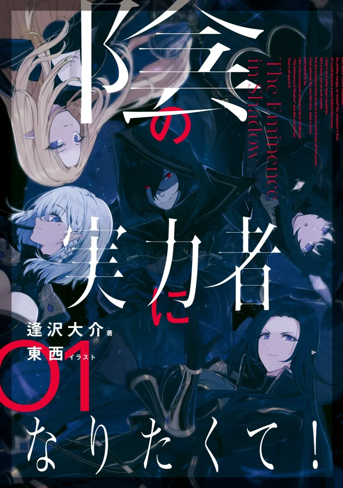
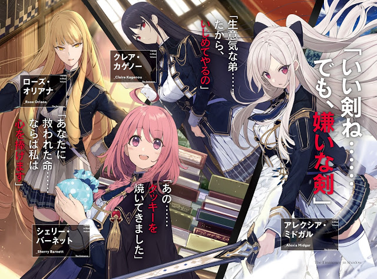

Kage no Jitsuryokusha ni Naritakute Volume 1
|  |  |
|  |
Prolog
Sejujurnya aku tidak ingat apa yang menjadi pemicu keinginan ini. Yang kutahu, aku selalu mengagumi kekuatan dalam bayangan sejauh yang bisa kuingat.
Apa itu anime? manga—atau film? Kurasa itu tidak masalah. Aku sangat menyukai apa pun yang menampilkan seseorang dibelakang layar, atau mereka yang sering ku panggil kekuatan dalam bayangan. Karakter-karakter itu tidak pernah menjadi protagonis atau bos terakhir, melainkan berperan di belakang layar, tempat dimana mereka memamerkan kekuatan mereka dan mencampuri urusan orang lain. Aku selalu mengagumi orang-orang yang berada di balik bayang-bayang. Aku ingin menjadi salah satu dari mereka.
Seperti halnya anak-anak yang mengagumi pahlawan super favorit mereka. Itulah aku, tapi dengan kekuatan dalam bayangan.
Yah, ada satu hal yang membedakan kami: Kekagumanku terhadap mereka tidak setengah-setengah. Malahan, hal itu terpendam lebih dalam di hatiku, tidak pernah padam dan selalu membimbing ku menjalani kehidupan. Untuk menjadi lebih kuat, aku mempelajari segala sesuatu dari karate sampai tinju, dari ilmu berpedang sampai seni bela diri campuran. Aku berusaha keras dalam setiap latihanku, menyembunyikan kekuatanku yang sebenarnya dari dunia dan mempersiapkan diri untuk hari yang ditakdirkan itu.
Di sekolah, aku berperan sebagai orang yang biasa-biasa saja, wajah yang tidak mencolok di tengah kerumunan. Seperti NPC dalam game atau salah satu dari seorang mob. Aku tidak pernah melakukan hal yang merugikan. Tapi di balik topeng kenormalan ini, aku berlatih dengan penuh semangat. Itulah bagaimana aku menghabiskan seluruh masa mudaku.
Tapi seiring berjalannya waktu, perasaan gelisah mulai menghantuiku: Sudah waktunya aku untuk menghadapi kenyataan.
Ya itu benar.
Semua itu tidak ada artinya.
Aku menyadari kalau diriku tidak akan pernah sekuat pemimpin bayangan dalam cerita-cerita itu. Tidak peduli seberapa keras aku berlatih seni bela diri. Tentu saja, aku bisa memukul beberapa cecunguk…tapi cuma itu. Bayangkan kalau ada orang yang ngeluarin pistol, pertarungannya pasti akan sangat sulit dan jika aku dikelilingi oleh tentara dengan perlengkapan lengkap, udah pasti aku “tamat” lalu innalilahi.
“Kekuatan dalam bayangan” yang dikalahkan oleh beberapa tentara… Hah! Cocotmu! Anggap ae gini, aku udah berlatih selama sepuluh tahun lamanya—atau aku udah jadi ahli bela diri terhebat di dunia. Tetap saja aku masih akan jadi samsak tinju para tentara itu.
Atau mungkin aku berhasil melarikan diri atau berlatih cukup keras untuk melawan balik. Semua itu ada di ranah kemungkinan. Tapi meskipun aku berhasil melakukan itu, mereka bisa meluncurkan nuklir dan melenyapkanku dalam sekejap. Tubuh manusia ada batasnya juga. Itulah yang ku tahu.
Konon, kekuatan dalam bayangan yang ku kagumi itu tidak akan pernah bisa dihancurkan oleh nuklir. Yang berarti aku juga harus tahan dari serangan itu.
Apa yang dibutuhkan seseorang untuk selamat dari serangan nuklir?
Apa itu kemampuan pukulan?
Mungkinkah itu tubuh yang kuat?
Bagaimana dengan stamina yang tidak terbatas?
Salah, salah, dan salah lagi. Kau membutuhkan jenis kekuatan yang sama sekali berbeda.
Beberapa orang menyebutnya sihir, mana, chi, atau aura, atau… Kau ngerti kan maksudnya. Apa saja bisa. Aku perlu mendapatkan kemampuan rahasia ini. Itulah kesimpulan yang berhasil ku dapatkan, setelah menghadapi kenyataan secara langsung.
Sini biarku jelaskan. Misalnya seseorang sedang mencari kekuatan magis. Siapa pun akan berpikir mereka gila. Jelas, akupun sama. Aku pasti berpikir mereka sudah gila.
Tapi pertimbangkan kembali hal ini: Tidak ada seorang pun di dunia ini yang telah membuktikan bahwa sihir itu ada—atau yang menyangkalnya.
Aku tidak dapat menemukan kekuatan ini dengan kewarasanku yang utuh. Aku harus terjun ke kedalaman kegilaan.
Aku mulai berlatih dengan cara baru yang hampir mustahil.
Lagipula, tidak ada seorang pun yang tahu bagaimana cara mendapatkan sihir, mana, chi, aura, atau apa pun yang kau miliki.
Aku berlatih meditasi Zen; Aku menantang upacara penyucian dengan berdiri di bawah air terjun; Aku memfokuskan seluruh keberadaanku ke dalam; Aku berpuasa; Aku menguasai seni yoga; Aku pindah agama; Aku mencari roh suci; Aku berdoa kepada tuhan; Aku mengikatkan diri di kayu salib. Tidak ada jawaban yang tepat. Pilihanku hanyalah melakukan hal yang kuyakini, sendiri di dalam kegelapan.
Seiring waktu berlalu. Aku sudah mendekati musim panas terakhirku sebagai siswa sekolah menengah atas, dan aku belum menemukan sihir atau mana atau chi atau aura….
Hari sudah gelap saat aku menyelesaikan sesi latihan harian ku.
Aku mengambil dan memakai celana dalamku, yang tidak jauh dariku, dan menggoyangkan lenganku melalui lengan seragam sekolahku. Aku masih belum mendapatkan sebuah kekuatan mistis. Hanya saja, aku merasa seperti ada kemajuan dalam latihanku belakangan ini.
Seperti saat ini.
Aku bisa melihat cahaya yang berkedip-kedip di dalam pikiranku dan membuat pandanganku menjadi tidak fokus.
Bisa jadi itu sihir… atau aura… Apapun itu, aku merasakan efeknya—itu sudah pasti. Aku rasa latihan hari ini benar-benar berarti.
Ketika aku berada di puncaknya, aku merobek semua pakaian dan telanjang bulat di hutan. Hal ini membuat ku menyatu dengan alam. Aku membenturkan kepalaku ke batang pohon besar agar pikiran-pikiran duniawiku dapat keluar secara paksa. Ditambah lagi, hal itu merangsang otak ku dan membangkitkan kekuatan terpendam ku.
Kau tahu, aku sangat mengedepankan logika dalam hal ini.
Ya, semuanya mulai kabur sekarang. Ini sensasi yang sebanding dengan mengalami gegar otak. Aku keluar dari hutan dengan langkah kaki yang ringan, terasa seperti sedang menginjak awan.
Tiba-tiba, aku melihat cahaya — dua sinar melayang di udara dan membelah angkasa. Aneh sekali. Mereka memanggil ku, membimbing ku ke suatu tempat.
“Si-sihir…?” Aku mulai mendekat dengan langkah yang sempoyongan.
Itu pasti… pasti sihir! Aku akhirnya menemukan kekuatan yang tidak diketahui!
Aku dengan sadar merubah cara berjalanku menjadi berlari cepat, tersandung akar-akar pohon dan terus terhuyung-huyung ke depan—seperti halnya seekor binatang buas di hutan.
“Sihir! Sihir! Sihir! SIHIR, SIHIR, SIHIR!!!!! ” Aku berteriak, melesat ke arah sinar itu dan siap untuk merebutnya dari udara…
“Hmm…?”
Saat dua sinar depan memenuhi pandangan mataku dengan warna putih yang menyilaukan, aku mendengar deru melengking dari rem mendadak yang berdering dan berbunyi.
Dan kemudian bertabrakan. Dampaknya menghempaskan tubuhku… Dan sihirku…
Kesimpulannya, aku berhasil menemukan sihir.
Ketika aku membuka mata, aku merasakan dikelilingi oleh sihir, meskipun itu berbeda dari dua sinar tadi. Tapi siapa peduli, itu bukan masalah besar.
Oh, dan satu detail kecil lainnya: Sebagai efek samping, aku berhasil bereinkarnasi. Aku yakin telah membuka pintu ke dunia lain ketika kudapati sihir atau semacamnya. Bodatlah.
Sekarang ini, aku adalah bayi, berusia beberapa bulan. Aku baru saja mulai membentuk pikiran, tapi masih sulit bagiku untuk menebak berapa banyak waktu yang telah berlalu pada saat tertentu. Ditambah lagi, aku tidak mengerti satu bahasa pun disini, tapi kurasa sudah cukup mengenali kalau peradaban disini kurang lebih sama dengan Eropa abad pertengahan.
Tapi semua itu tidak penting. Aku sudah mendapatkan kekuatan sihir. Itulah bagian terpentingnya. Aku tidak peduli tentang bagaimana hal itu terjadi atau fitur bonus apa pun, semua bukan urusanku.
Aku melihat sihir segera setelah aku mulai menampilkan secercah kesadaran. Di sekelilingku, aku bisa melihat butiran cahaya yang sangat kecil mengambang dan berkilauan. Hal ini mengingatkan ku pada saat-saat di kehidupan masa lalu ketika bermain-main di padang bunga dengan telanjang bulat—semua itu tentunya kulakukan untuk melatih dan menemukan roh.
Yang mengejutkannya lagi, latihanku tidak sia-sia sama sekali. Maksudku, kemampuanku untuk mendeteksi sihir cukup membuktikan, dan aku bisa mengendalikannya semudah anggota tubuhku. Ini sebanding dengan ketika aku mengikat tubuhku yang telanjang di kayu salib, sebuah penghormatan pada Yesus… atau mungkin ketika aku berpindah agama dan menari-nari dalam doa sambil telanjang… Aku yakin setiap hal kecil dalam sesi latihan itu membantuku seiring perjalanan hidupku. Hal itu sudah menunjukkan padaku kalau aku bisa menjadi lebih kuat.
Ditambah lagi, waktu bukanlah masalah bagi seorang bayi. Aku siap menggunakan tahun-tahun ini untuk berlatih dan menjadi seorang yang terkuat dalam bayangan, untuk selamanya… Adoh, keknya aku pengen boker.
Yang aku ingat. Aku pernah dengar di suatu tempat kalau burung tuh membiarkan kotorannya keluar tanpa sengaja, dan menurutku bayi manusia juga sama. Tak peduli sebanyak apapun pikiranku melarang, naluriku tetap memerintahkanku untuk mengeluarkannya.
Tapi, dengan penguatan fisik yang telah kulatih pagi dan malam, aku mencoba menahannya untuk memberriku waktu…
“HUEeeeeeeeEEE!”
…memanggil seseorang.
Aku pikir sudah sepuluh tahun berlalu.
Kau tahu, sihir itu berbeda. Artinya, aku bisa melampaui batasan tubuh manusia: mengangkat batu-batu besar dengan satu jari, berlari dua kali lebih cepat dari kuda, melompat lebih tinggi dari rumah.
Meskipun begitu, aku bukanlah tandingan nuklir. Yah, aku tahu pertahananku akan meningkat dengan kapasitas sihirku, tapi pernahkah kau melihat daya tembak senjata-senjata itu di Bumi? Ada saat dimana aku merenungkan untuk melupakan hal itu sepenuhnya, karena kita tidak punya nuklir di dunia ini.
Tapi, apa gunanya seorang yang kuat dalam bayangan langsung menerima hal tersebut apa adanya?
Tidak bagus. Tidak sama sekali.
Itu berarti, misiku berikutnya adalah menjadi cukup kuat untuk mengalahkan senjata pemusnah massal. Setelah melakukan riset dan pelatihan yang mendalam, aku menemukan satu solusi ampuh, yang telah kumasukkan ke dalam eksperimen harianku sehari-hari.
Oh iya. Dan sepertinya aku terlahir dalam keluarga bangsawan. Selama beberapa generasi, anggota keluarga ini telah dilatih untuk menjadi ksatria sihir, yang menggunakan sihir untuk memperkuat dan membantai musuh dalam pertarungan. Dan sebagai bintang baru keluargaku (….BUKAN), aku menjalani hari-hariku sebagai murid biasa. Bagaimanapun, kekuatan dalam bayangan harus sangat hati-hati tentang kapan, di mana, dan pada siapa mereka menunjukkan kekuatan mereka. Ya…aku akan menunggu sampai saat itu.
Aku tahu diriku tidak mengerahkan potensiku yang sebenarnya dan memilih jalan pintas, tapi aku belajar beberapa keterampilan sebagai seorang murid yang berguna. Seperti bagaimana sihir digunakan di medan perang di dunia ini. Ini merupakan kesempatan yang baik bagiku untuk memikirkan teknik-teknikku sendiri.
Sejujurnya untuk lebih jelas, gaya bertarung dari kehidupan masa lalu ku seratus kali lebih logis dan mulus daripada gaya bertarung yang ada di sini. Maksudku, lihat saja pertarungan seni bela diri di dunia ini. Para pejuang ini melakukan gerakan-gerakan yang tidak perlu, mengambil gaya bertarung dari berbagai sekolah dan mengurangi gerakan-gerakan tersebut hingga menjadi yang paling baik. Ini menciptakan kondisi pertarungan yang “sempurna”. Tentu saja ini bergantung pada aturan permainan, tapi sikap mental ini dapat digunakan untuk mengidentifikasi yang terbaik dari yang terbaik dalam situasi apa pun.
Dan kemudian perhatikan dunia ini. Pertama dan terutama, teknik bertarung mereka tetap berada di negera asalnya. Yang berarti aliran pertempuran sekolah yang berbeda tidak melintasi perbatasan. Ditambah lagi, ada beberapa keterampilan rahasia tertentu yang tidak akan diizinkan oleh negara untuk keluar dari wilayah hukum mereka—bukan berarti kita dapat menyebarkannya, karena tidak ada bentuk media yang tersedia bagi kita. Ini berarti kita tidak dapat menggabungkan teknik dari bentuk pertarungan lain, apalagi menolak atau meningkatkan teknik kita sendiri.
Jika harus mendeskripsikan sistem ini dalam satu kata, aku akan menyebutnya tidak mulus.
Tapi ada satu perbedaan mendasar antara kedua dunia tersebut. Ya benar: yaitu sihir. Hal tersebut benar-benar mengubah garis dasar performa tubuh.
Ambil contoh kekuatan fisik, misalnya.
Aku dapat mengangkat seseorang dengan satu tangan, yang berarti pengetahuan apapun tentang pertarungan tangan kosong dan gulat, atau “pertarungan di darat,” tidak akan terpakai. Bahkan jika kita berada dalam posisi terjatuh dan musuh menaiki mu, aku dapat melayang di udara dengan melenturkan perutku. Jika kakiku tersangkut pada musuh yang sedang melakukan pertahanan serangan, aku bisa melontarkan mereka dengan mengaktifkan otot kakiku. Keren kan?
Pertarungan darat tidak perlu dibahas lagi.
Ini seperti bagaimana manusia punya metode bertarung dan gorila punya rasnya sendiri. Dan aku akan berhenti sampai disitu saja.
Ada juga perbedaan dalam jarak dan kecepatan para petarung dalam melangkah ke dalam serangan mereka—yang berarti, lebih sulit untuk memprediksi pergerakan mereka dalam pertarungan. Ini mungkin menjadi hal yang paling penting. Maksudku, seni bela diri adalah tentang membaca lawan mu pada jarak yang tepat. Sudut, posisi dan jarak serangan mu adalah segalanya.
Butuh beberapa saat bagiku untuk menguasai yang terakhir, terutama karena pesawat tempur itu menyerang dari jauh. Seperti enam belas kaki jauhnya. Kurasa aku mulai paham. Mereka cepatnya bukan main dan mengambil jarak yang sangat jauh, dan aku hanya berasumsi kalau itulah cara mereka bertarung… sampai aku menyadari itu untuk mengimbangi taktik pertahanan mereka yang buruk.
Aku yakin hal tersebut dapat dipahami oleh semua ahli bela diri: Mereka yang tidak bisa bertahan akan berdiri terlalu jauh dari lawan mereka.
Aku paham, pasti ngeri jika kena. Pastinya pilihan terbaik adalah mundur ke tempat yang tidak bisa dijangkau musuh. Tapi ini menghasilkan sebuah kontes dimana satu petarung menyerang dan yang lainnya mundur, atau sebaliknya, dan itu sangat membosankan. Kau sebut itu berguna? Nggaklah. Itu hanyalah latihan lari bolak-balik.
Tidak masalah jika para petarung berjarak lima atau seratus meter. Mereka tidak dapat mendaratkan serangan yang berarti. Jaraknya bisa enam atau tujuh atau sepuluh meter—semuanya sama saja.
Itu telah menjadi hal yang umum untuk menutup celah dan menyelesaikannya.
Tapi begitu kau melewati ambang batas tertentu, satu milimeter bisa membuat perbedaan besar. Dan itu berada pada titik yang tepat dimana aku bisa memberikan pukulan dan bereaksi terhadap serangan. Tambahkan faktor lain seperti sudut serangan mu, dan sedikit saja perubahan dapat berarti keuntungan—atau kerugian. Selisih yang paling sempit adalah jarak terbaik di antara dua petarung.
Pertarungan seharusnya tidak tentang satu petarung yang berlari dalam jarak enam belas kaki dan yang lainnya melompat mundur sembilan belas kaki.
Kurasa aku memahami semua ini dengan ide tentang apa yang diharapkan dari dunia lain, yang ditambah dengan ketidakpahaman ku tentang sihir-membuatku bingung tentang adegan pertarungan mereka. Tapi ya, aku sudah mendapatkan arah yang benar akhir-akhir ini. Sekarang semua sudah tenang.
” Astaga, kamu sangat kuat…,” rintihku setiap hari saat dia mengalahkanku.
Aku berlatih setiap hari di rumah, dimana ayah kami pada dasarnya membimbing kami tentang bagaimana cara bertarung, dan aku berduel dengan kakak perempuanku. Aku tahu dia hanya dua tahun lebih tua dariku, tapi dia punya bakat alami, menurut semua orang. Jika dia mempertahankannya, dialah yang akan mengambil alih sebagai kepala keluarga, hal yang tidak biasa di dunia ini, dimana sihir dapat membuat wanita cukup kuat untuk menjadi pewaris.
Tapi aku tidak bisa menang. Jika aku ingin menjadi pemimpin bayangan, aku harus menjadikan diriku sebagai karakter mob yang biasa-biasa saja.
Begitulah caraku menjalani hari-hariku. Menambah materi pelajaran tentang bagaimana bersikap sebagai seorang bangsawan dan bergaul dengan orang-orang untuk mengamankan tempatku sebagai seorang figuran yang rendah, dan aku hampir tidak punya waktu luang di siang hari.
Yang berarti satu-satunya waktu bagiku untuk berlatih adalah saat semua orang sudah tidur, hingga larut malam. Aku mungkin harus mengurangi waktu tidur nyenyakku, tapi dengan sihir aku bisa pulih dengan sangat cepat dan meditasi untuk mendapatkan waktu tidur yang lebih lama dengan cara yang baru. Dan sekarang, aku sudah cukup banyak mengalami sindrom tidur pendek. Aku berhasil.
Oke, waktunya untuk memulai bisnis. Aku menjalani latihan yang biasa kulakukan di hutan. Aku punya rencana khusus hari ini.
Kudengar para bandit berkeliaran di kota tua di dekatnya. Menurut penyelidikanku, itu adalah komplotan besar pencuri—dan kesempatan sempurna untuk menguji senjata baruku.
Aku mengalahkan bandit di mana-mana. Tapi sekelompok kriminal? Itulah kejadian tahun ini. Dan aku selalu kekurangan lawan tanding, jadi aku menyambut para pelaku kejahatan dengan tangan terbuka.
Oh, tolong, tolong, kumohon penuhi tempat ini dengan lebih banyak kejahatan!
Kupikir sudah menjadi kebiasaan bagi desa-desa untuk mencoba menangani para pelaku kejahatan dengan cara mereka sendiri, tapi kebanyakan mereka lolos bebas dari hukuman. Maksudku, sistem peradilan kami ada di kota, itulah sebabnya aku memutuskan mengambil alih hukum itu dengan tanganku sendiri.
Sekarang ini menandai hari bersejarah pertarungan resmi pertamaku dengan senjata terbaruku. Aku telah bereksperimen dengan senjata ini selama berbulan-bulan dan menyebutnya “slime bodysuit”.
Biar ku jelaskan.
Kita dapat menggunakan sihir di dunia ini untuk memperkuat tubuh dan senjata kita, tapi akan terjadi penurunan energi ketika ditransfer dari satu bentuk ke bentuk lainnya. Sebagai contoh, jika aku mengalirkan seratus arus sihir melalui pedang baja rata-rata, hanya 10 persen dari arus sihir itu yang akan berguna dalam pertempuran. Sebanyak 90 persen hilang. Bahkan pedang mithril, yang dikenal cocok dengan sihir. Pedang itu dianggap berkelas tinggi jika bekerja pada kapasitas 50 persen.
Saat itulah slime menarik perhatianku. Slime adalah makhluk magis yang menggunakan energi untuk berubah bentuk dan bergoyang dari satu tempat ke tempat lain. Menurut penyelidikan ku, aku menemukan kalau slime punya konduktivitas 99 persen yang menakjubkan. Selain itu, slime berada dalam keadaan cair, yang berarti mereka dapat mengubah bentuknya sesuka hati.
Aku mulai menguji slime jeli setelah menangkap dan menghancurkan inti mereka—dengan mudah lebih dari seribu ekor. Bahkan, aku membuat mereka di ambang kepunahan di daerahku akibat membunuh terlalu banyak dan harus melakukan ekspedisi untuk menemukan lebih banyak lagi.
Jeli mudah ditangani dan kuat, untuk boot. Aku berhasil membentuk slime menjadi bodysuit yang bisa dipakai, yang super ringan dan senyap, tidak seperti armor. Ditambah lagi, hampir, seperti mendukung gerakan ku? Dan tentu saja, aku memberinya pertahanan yang mematikan.
Untuk saat ini, aku mengenakan slime bodysuit hitam. Pakaian yang sederhana, tanpa hiasan yang sangat pas dengan tubuhku, kecuali mata, lubang hidung, dan mulut. Aku hampir tidak bisa dibedakan dari penjahat dalam manga detektif terkenal.
Aku mungkin perlu memikirkan desain yang lebih cocok saat aku ikut campur dalam skema sebagai yang terkuat dalam bayangan sepenuhnya.
Aku berhasil tiba di kota tua itu larut malam, tapi aku bisa melihat beberapa cahaya dalam kegelapan. Para pencuri sepertinya sedang mengadakan pesta untuk merayakan perampokan mereka terhadap para pedagang. Mantap, aku sangat beruntung.
Soalnya, pencuri tidak pandai dalam membuat rencana, dan mereka segera menyia-nyiakan apa yang mereka curi, yang berarti mereka hanya punya sesuatu yang layak setelah penyerangan sukses. Dan harta seseorang adalah harta orang lain. Apa yang menjadi milik mereka adalah milikku. Beginilah caraku mendapatkan dana untuk menjadi seorang yang terkuat dalam bayangan.
Bagaimanapun, aku mengacaukan pesta mereka, yang meriah sekali dengan mendobrak—tidak dengan serangan mendadak, karena itu tidak akan membuat sesi latihan yang baik.
“Woooi! Serahkan jarahan kalian, bangsad!” Aku berteriak di tengah camp mereka.
“Si-Siapa bocah lemah ini?!”
Ya soalnya umurku baru sepuluh tahun. Wajarlah kalau aku pendek.
“Kalian dengar aku! Sekarang serahkan barangnya!” Aku berteriak, menghantam pria kasar itu ke seberang ruangan karena menyebutku kecil.
Para pencuri lainnya akhirnya menghunus senjata mereka.
“Hei, menyerahlah, dan kami tidak akan menahan, kau baj—…!”
“Terima itu!” Aku berteriak saat menebas lehernya, memutuskan kepalanya di tengah-tengah omongannya.
Itu benar. Pedangku terbuat dari slime, yang berarti aku bisa mengeluarkannya dari bodysuit-ku saat situasi membutuhkannya. Dan pedang itu punya banyak fungsi yang bagus.
Nomor satu. Pedang itu bisa memanjang.
“Terima itu! Dan itu! Dan itu!” Aku mengayunkan pedangku dan membunuh semua pencuri kroco di sekitarnya.
Aku mengulurkan slime dalam bentuk cambuk dengan ujung setajam pedang. Ini pertama kalinya aku menggunakannya, jadi aku sedikit gugup, tapi aku benar-benar bisa melihat bagaimana cambuk itu bisa berguna.
“Dan itu! Dan itu! Dan… huh?”
Kusadari ruangan menjadi hening karena aku sedikit terbawa suasana karena menebas dan memotong di sekitarku.
Tunggu, hanya ada satu orang yang tersisa?
“Si-Siapa kau ini…?”
“Eh, kurasa kau akan menjadi kelinci percobaanku untuk fungsi nomor dua.”
“A-Apa yang kau bicarakan…?!”
“Kalau dijelaskan begini, kau terlihat lebih kuat dari mereka semua. Aku berasumsi kau seperti bos mereka atau apalah itu, kan? Peluang mu untuk menang sangat kecil, tapi jika kau membiarkan ku mempraktekannya padamu, aku yakin kau akan hidup selama, dua menit lebih lama. Semoga berhasil.”
“Be-Berhenti bermain-main, dasar bocah! Di ibu kota, aku adalah—…!”
“Hei kau. Hentikan pidatonya dan sini maju.”
“Mati lu, bajingan!” teriak sang Bos (atau siapapun pun) saat dia menutup jarak di antara kami, menggunakan waktu lamanya yang berharga untuk mengayunkan ke arahku, dan jelas…aku tidak bergeming.
Pedangnya menancap lurus ke dadaku, dan aku tersungkur ke tanah saat terkena serangannya.
“Ha ha! Itulah yang kau dapatkan jika main-main denganku! Aku sudah menguasai metode Royal Bushin, dan… A-Apa?!”
“Ta-daa!… Kau bahkan tidak bisa menggoresku.”
Aku bangkit berdiri seolah-olah tidak terjadi apa-apa, dan wow, aku tidak bisa lebih bahagia dengan pertahanan suitku! Maksudku, serangan lemah ini bahkan tidak bisa menyentuhku.
“Kudengar sepertinya teknik itu sedang populer di ibukota. Tunjukkan padaku.”
“Sialan kau!” umpat sang bos saat dia menyerangku.
Ya. Tanpa keringat. Saat dia mengayunkan pedangnya dengan sekuat tenaga, aku bahkan tidak menyiapkan pedangku, menghindar dan merunduk untuk menghindarinya, tidak ada masalah.
Teknik Royal Bushin, bukan? Aku bisa mengikuti cara mereka menggunakan pedang.
Menurutku, tidak setiap hari kau bisa melihat seseorang bertarung karena sesuatu yang lain selain masalah spiritual, aturan-aturan kuno, atau keyakinan pribadi di dunia ini. Pertarungan ini dimotivasi oleh logika. Aku bisa melihatnya dari rangkaian serangannya yang ceroboh.
Dalam hitungan detik, sedikit maju.
Aku melihat dia menghitung serangan berikutnya dan melakukan pendekatan yang cerdik. Meski begitu, serangannya melewati banyak hal yang seharusnya, dan di momen lengah berikutnya, aku melangkah keluar dari jangkauannya.
“Ke-kenapa… kenapa aku tidak bisa mengenaimu?!”
“Soalnya kau lebih lemah dari orang tuaku. Padahal kukira kau lebih kuat dari kakakku. Bukan berarti itu ada artinya. Dan aku yakin dia akan mengalahkanmu tahun depan.”
“Dasar bocah brengsek!!!!!!” dia berteriak, dengan panik menebaskan pedangnya ke arahku.
Aku menahan serangannya sebelum menendang pelan di bagian tulang keropongnya—mengangkat kakiku ke depan dengan cepat seolah-olah karena refleks.
“Gwah, ah! Kenapa…?” sang Bos merintih, meringkuk dalam posisi seperti janin dan memegangi kakinya.
Darah menetes dari tulang keropongnya dan menggenang di tanah.
Itu trik murahan, lho. Aku punya bilah setajam pemecah es yang mencuat dari jari kakiku.
Fitur berguna kedua dari pedang slime adalah aku bisa menggunakan pedangku dari mana pun dan kapan pun kumau. Kupikir taktik ini menunjukkan potensi yang paling besar. Yang harus kulakukan adalah berada di depan musuh dan menebasnya dengan pedang di sepatuku, karena serangan tubuh bagian bawah sulit untuk ditangkis. Aku menahan serangan, mengunci pedang, dan memberi tendangan pada lawanku. Tidak ada yang mencolok, tapi itu sukses.
“Kurasa kita sudah selesai.”
“Tu-tunggu…!”
“Kau bahkan tidak bertahan dua menit,” kataku sebelum menendang dagu Bos dengan bilah di kakiku.
Kematian dengan cara ditusuk.
Dia berkedut saat aku menggulingkannya ke samping dan mengobrak-abrik jarahannya. “Karya seni? Aku tidak bisa menjualnya. Ada makanan basi. Ayolah. Di mana uang tunai, perhiasan, dan logam berharga? Berikan, berikan, berikan.”
Ada barang rampasan yang berharga di beberapa gerbong. Dan banyak pedagang yang mati.
Aku berbisik pada mayat-mayat itu, “Aku sudah membalas dendam. Sekarang kalian dapat beristirahat, ketahuilah harta kalian akan dimanfaatkan dengan baik. Kuharap kalian berhasil mencapai surga.”
Aku mengumpulkan hasil rampasanku dan berdoa dalam keheningan. Aku sudah mengira akan menemukan sekitar lima juta zeni. Satu zeni kurang lebih sama dengan satu yen Jepang. Semua ini akan membantu mendanai kegiatanku sebagai yang terkuat dalam bayangan. Kau tahu, dunia akan menjadi tempat yang jauh lebih baik jika dikuasai oleh penjahat. Oh, seandainya hidup ini seperti video game dan aku bisa bertemu musuh dengan hanya dengan berjalan kaki.
“Tolong buat lebih banyak malapetaka di kehidupanmu selanjutnya,” kataku kepada Bos, memberinya acungan jempol, saat aku melihat… sesuatu yang jauh dari ujung jariku.
“Apa itu… kurungan?”
Terlihat kokoh dan cukup besar.
“Apa mereka punya budak? Ah, sulit banget sih dapet sesuatu yang bisa ku tukarkan dengan uang.”
Tapi bagaimana jika ada sesuatu yang berharga di dalamnya? Aku mengangkat penutupnya.
“Yah, ini… tidak terduga.”
Aku bingung bagaimana menjelaskannya, tapi kurungan ini berisi…segumpal daging yang membusuk. Aku bisa bilang itu mungkin manusia, tapi tidak ada petunjuk mengenai usia atau jenis kelaminnya.
Tapi masih hidup. Tunggu, mungkin saja dia masih sadar. Aku mengintip ke dalam kurungan, dan dagingnya tiba-tiba bergoncang.
Aku pernah mendengar tentang Gereja yang mengeksekusi makhluk-makhluk ini. Kupikir mereka disebut “kerasukan”. Mereka terlahir sebagai manusia normal sampai daging mereka membusuk entah bagaimana, ditakdirkan untuk mati. Tapi Gereja berusaha keras untuk membeli mereka, mengeksekusi mereka atas nama pemurnian. Mereka mengklaim sedang mengusir iblis, tapi sebenarnya mereka hanya membunuh mereka yang sakit. Sedangkan masyarakat yang tidak tahu apa-apa menyambut dan memuji mereka karena telah menjaga perdamaian di dunia. Seperti yang kau harapkan dari Abad Pertengahan. Sungguh sangat menyedihkan.
Aku yakin bisa mendapatkan lebih banyak zeni daripada seluruh muatan rampasan ini jika aku menjualnya ke Gereja, tapi itu tidak ada gunanya karena aku tidak bisa menjualnya.
Yah, sepertinya aku harus membebaskannya dari penderitaan.
Aku menusukkan pedang slime-ku ke dalam kurungan… saat aku menyadari ada sesuatu yang lain.
Yakni, gumpalan daging ini mengandung sihir yang berlimpah. Aku telah melatih sihirku sejak kecil, tapi ini melebihi sihirku—sejujurnya sihirnya sangat mengerikan. Dan ini…
“Apa ini panjang gelombang ini…efek dari kelebihan sihir?”
Sepertinya kelebihan sihir pasti menjadi alasan kenapa hal ini berubah menjadi segumpal daging. Aku telah menderita efeknya secara langsung sebelumnya. Jika aku tidak bisa mengendalikannya saat itu, aku mungkin akan mengalami nasib yang sama.
Aku tahu sihir punya efek tertentu pada tubuh, dan aku merasakannya dengan sangat baik pada hari yang ditakdirkan itu. Aku bisa merasakan potensinya untuk meningkatkan kemampuanku dalam menahan sihir dan memungkinkanku untuk menangani lebih banyak sihir, tapi itu terlalu berbahaya kalau sampai menimbulkan kelebihan sihir. Aku membuang ide itu.
Tapi jika aku secara hipotetis melakukan eksperimen pada produk dari fenomena ini…aku bisa lebih dekat untuk menjadi pemimpin bayangan tanpa risiko apa pun.
“”Aku bisa menggunakan ini…,” kataku sambil meraih daging dan memasukkannya sihir.
Wuah, sudah sebulan penuh, ya…? Kupikir sambil menghela nafas aku teringat kembali pertemuan pertamaku dengan gumpalan itu, dulu saat berada di desa tua yang sama.
Aku penasaran, kenapa semuanya berubah menjadi seperti ini.
Semua eksperimenku pada daging berjalan dengan lancar—yah, hingga saat ini. Aku menghabiskan hari-hariku mengisi daging dengan energi sihir. Itu bukan tubuhku, jadi aku bisa melakukannya semaku. Aku sedang melakukan eksperimen kecilku, menguji ini dan itu. Sejujurnya, ini menyenangkan. Lagipula, salah satu kegembiraan terbesarku dalam hidup adalah merasa lebih dekat dengan esensi sihir dan menyaksikan kekuatanku tumbuh di depan mataku. Aku menekan ke depan, melangkah ke arah batas-batas sihir dengan lebih teliti, kuat, dan detail, sampai akhirnya aku berhasil menguasai sihir di bawah kendali penuhku, lalu… seorang gadis elf berambut pirang muncul.
Lebih tepatnya ini bisa dibilang kalau aku terlalu terpaku pada peningkatan kemampuan sihirku sampai tidak menyadari bahwa daging itu adalah seorang elf berambut pirang. Tak kusangka gumpalan daging busuk itu akan kembali ke bentuk aslinya. Aku mencoba mengucapkan salam perpisahan yang ramah – kau tahu, sesuatu seperti Kau sudah bebas atau Selamat jalan atau Kau punya masa depan yang cerah menunggumu. Tapi dia bilang tidak punya rumah, bersikeras untuk membalas kebaikan ku karena telah menyelamatkan hidupnya, padahal sebenarnya aku tidak melakukannya. Itu semua kebetulan.
Aku mempertimbangkan untuk membuangnya sebelum keadaan menjadi merepotkan, tapi akhirnya aku menjadikannya Bawahan Kekuatan dalam bayangan A. Lihat saja. Dia tidak membuatku merasa seperti tipe orang yang akan mengkhianatiku, dan dia kelihatannya pintar… Ada sesuatu tentang dirinya yang membuatku yakin kalau dia punya banyak bakat.
Dan meskipun dia juga berusia sepuluh tahun, dia lebih dari cukup membuktikan kalau elf berkembang lebih cepat secara mental daripada manusia.
“Dan mulai hari ini dan seterusnya, kamu adalah Alpha.”
A atau Alpha. Keduanya cocok.
“Dimengerti,” jawabnya dengan anggukan.
Seperti elf pada umumnya—dia cantik dengan rambut pirang, mata biru, dan kulit yang putih.
“Dan tugasmu adalah…” Aku berhenti sejenak untuk berpikir.
Ini termasuk penting. Tugasnya adalah menjadi asisten pemimpin bayangan. Kesalahan tidak diperbolehkan di sana. Yang berarti aku harus mengatur adegan dengan menjawab beberapa pertanyaan dasar. Seperti, apa sebenarnya yang dimaksud dengan kekuatan dalam bayangan? Dan apa tujuan mereka?
Mengeluarkan narasi yang tepat adalah kuncinya. Jika aku berkata ingin balas dendam karena kalah di slot pachinko, aku tidak akan terlihat begitu keren, bukan?
Aku harus memilih dengan bijak. Mau bagaimanapun, semua impianku dipenuhi dengan kekuatan dalam bayangan bahkan sebelum aku datang ke dunia ini dan tentu saja setelahnya. Aku telah mencampur dan mencocokkan ribuan—tidak, puluhan ribu—kemungkinan skenario dalam pikiranku. Dan aku punya satu yang sempurna untuk kesempatan ini.
“Bersembunyi dalam bayang-bayang dan mencegah kebangkitan Iblis Diabolos.”
“Iblis Diabolos…?” Alpha memiringkan kepalanya dengan bingung.
“Aku yakin kamu pernah mendengar tentangnya. Kamu tahu, ceritanya sudah lama sekali. Diabolos membawa dunia kita ke ambang kehancuran ketika tiga pahlawan pemberani—seorang manusia, elf, dan beastkin—bekerja sama untuk memusnahkannya dan melindungi dunia.”
“Iya. Tapi bukankah itu hanya dongeng?”
“Tidak, itu benar-benar terjadi. Tapi sebenarnya jauh lebih rumit dari itu…,” lanjutku, saat senyum kecut kecil muncul di wajahku. Biar keliatan seperti mencapai levelku dan memutarbalikkan skenario dari sebuah legenda adalah hal yang mudah.
“Tepat sebelum para pahlawan membunuh iblis itu, dengan nafas terakhirnya, dia menaruh kutukan pada mereka, yang dikenal sebagai Kutukan Diabolos.”
“Kutukan Diabolos? Aku belum pernah mendengar itu sebelumnya.”
“Oh, tapi itu ada. Itu adalah kutukan dari orang yang kerasukan…dan penyakit yang merusak tubuhmu.”
“Apa? Tidak mungkin…” Alpha menjadi ketakutan.
“Keturunan para pahlawan telah menderita penyakit ini. Dulu, kutukan Diabolos bisa disembuhkan. Sama seperti milikmu.”
Tidak ada yang percaya Alpha mengalami kerasukan sampai saat ini. Kulitnya yang halus dan tidak cacat adalah bukti untuk mendukung ceritaku.
Meski ini adalah kebohongan besar.
“Itu adalah bukti seseorang berasal dari keturunan para pahlawan yang menyelamatkan dunia. Kamu tahu, mereka yang kerasukan dulu dipuji, dihargai, dan dilindungi—di masa lalu.”
“Tapi tidak ada yang menghargai kami lagi, apalagi…” Alpha berhenti, menutup wajahnya.
“Ada seseorang di luar sana yang memutarbalikkan sejarah—menghapus kebenaran tentang garis keturunan orang yang kerasukan dan menyembunyikan obat untuk kutukan. Yang lebih buruk lagi, orang-orang ini menjadi sasaran penghinaan.”
“Ngh…! Siapa yang akan melakukan hal seperti itu?!”
“Mereka yang berencana untuk membangkitkan Diabolos. Karena mereka yang memiliki kutukan itu membawa garis keturunan para pahlawan dan energi magis tingkat tinggi. Dengan kata lain, mereka berfungsi sebagai kekuatan tempur utama bagi kita. Di sisi lain, mereka adalah pengacau bagi para pengikutnya.”
“Itulah sebabnya kami disebut kerasukan dan dibuang…”
“Tepat sekali. Kamu kehilangan kampung halaman dan keluargamu-semuanya karena kamu dituduh melakukan dosa palsu. Bukankah mereka hina?”
“Ya. Tidak mungkin aku tidak menganggap mereka sangat menjijikkan.”
“Kultus Diabolos. Itulah musuh kita. Mereka hanya bekerja di belakang layar, itulah sebabnya kita harus menyembunyikan diri kita juga. Mengintai dalam kegelapan dan memburu dalam bayangan.”
“Aku menduga kultus itu cukup tangguh karena mereka punya banyak dukungan untuk mengendalikan keadaan di belakang layar. Yang berarti musuh kita memegang posisi kekuasaan… dan gerombolan orang yang berada di bawah kendali mereka tidak mengetahui kebenaran…”
Aku mengangguk dengan serius. “Perjalanan kita mungkin berbahaya. Tapi kita harus maju. Apa kamu mau ikut bersamaku?”
“Jika itu yang kamu inginkan, maka aku akan mengabdikan hidupku untuk itu. Kita akan menghukum para pendosa itu dengan kematian….” Alpha menatapku dengan mata birunya yang tajam dan tersenyum menantang. Wajahnya cantik meski masih muda dan penuh dengan tekad dan keteguhan hati.
Aku mengepalkan tanganku di dalam benakku. Whoo-hoo! Gadis elf ini mudah tertipu!
Jelas, Kultus Diabolos itu tidak ada, yang berarti kita tidak akan pernah menemukan mereka. Ini juga memberikan alasan bagiku untuk menuduh dan membantai sindikat pencuri di daerah itu karena berada dalam Kultus. Dan aku yakin kita bisa mengintai pertarungan antar pejuang dan ikut campur sebagai pemimpin bayangan. Dan—dan kita bisa mengatakan hal-hal palsu untuk kata-kata perpisahan kita! Seperti Akhir sudah dekat… Atau Kebangkitan iblis sudah dekat… Dan akan sangat keren jika kita bisa tiba bersama embusan angin di medan perang, terus berkata Kalian bodoh… Kalian sedang dikendalikan…, sebelum akhirnya memusnahkan semua orang…! Uwaw. Aku bisa terus menerus melakukan itu.
Benar. Aku hampir lupa. Bagian yang paling penting. Nama organisasi ini…
“Kita adalah Shadow Garden… Kita mengintai dalam kegelapan dan memburu dalam bayangan…”
“Shadow Garden. Itu nama yang bagus.”
Iya, kan? Keren dah pokoknya.
Inilah saat dimana Shadow Garden dan Musuh Terbesar Dunia—Kultus Diabolos—lahir. Aku bergerak selangkah lebih dekat untuk menjadi seorang yang terkuat dalam bayangan.
“Kurasa sekarang saatnya untuk memulai dengan menggunakan sihir kita dan berlatih tanding satu sama lain. Aku akan bertindak sebagai petarung utama dalam pertempuran, tapi kamu harus menjadi lebih kuat untuk bertarung dalam pertarungan skala kecil.”
“Aku mengerti. Kita punya musuh yang tangguh di hadapan kita. Aku harus meningkatkan kemampuanku sendiri.”
“Bagus. Itu baru semangat.”
“Lalu kita harus menemukan keturunan pahlawan lainnya dan melindungi mereka.”
“Uh, erm, ya. Secukupnya saja.”
Pasti menyenangkan bermain kekuatan dalam bayangan dengan lebih banyak orang, karena itu akan membuatnya terasa lebih seperti organisasi resmi. Tapi aku tidak butuh banyak orang. Sejujurnya aku tidak masalah jika hanya kami berdua saja.
“Baiklah, untuk saat ini, ayo kita fokus untuk menjadi lebih kuat,” usulku, sambil menyiapkan pedang kayuku.
Aku menangkis serangan Alpha, yang punya serangan tak terduga. Aku pikir dia hanya seorang pemula sampai saat ini. Alpha punya kemampuan yang baik dan energi magis yang banyak, yang berarti aku bisa memanfaatkannya dengan baik.
Di bawah sinar bulan, aku mengayunkan pedang kayuku saat pikiran-pikiran ini melintas di benakku.
Chapter1: Memulai pelatihan Shadowbroker
Sudah tiga tahun sejak berdirinya Shadow Garden—misalnya. Alpha dan aku berusia tiga belas tahun, dan kakakku Claire, lima belas tahun.
Usia tiga belas tahun itu tidaklah istimewa, tapi lima belas tahun beda cerita. Saat itulah bangsawan memulai pendidikan tiga tahun mereka di sebuah sekolah di ibukota kerajaan. Sebagai penyandang harapan dan impian keluarga Kagenou, Claire mengadakan pesta perpisahan gila-gilaan untuknya, yang diselenggarakan oleh ibu kami. Uwah, kek konyol aja gitu.
Semua berjalan lancar. Yah, itu baik-baik saja sampai dia menghilang pada hari keberangkatannya. Baca: Kekacauan terjadi di keluarga Kagenou.
“Ruangannya sudah begini ketika aku masuk,” jelas ayahku dengan suara rendah dan tenang. Wajahnya juga lumayan. “Tidak ada tanda-tanda perlawanan. Tapi sepertinya jendelanya telah didobrak. Pelakunya pasti sudah ahli untuk melakukan ini tanpa aku dan Claire sadari.”
Dia menyentuh bagian bawah jendela dan menatap langit dengan sedih. Segelas wiski bisa melengkapi pemandangan itu.
Kalau saja dia punya rambut…
“Terus?” balas suara yang dingin. ” Apa maksudmu kita kurang beruntung karena penculiknya sangat ahli?”
Itu adalah ibuku.
“B-Bukan itu maksudku. Aku hanya menyatakan fakta…,” jawab ayahku sambil keringat dingin menetes di pipinya.
Ada jeda.
“Diamlah, botaaaaaaaaak!!”
“Eep! A-Aku minta maaf! Maafkan aku!!”
Ngomong-ngomong, rasanya aku ini seperti tidak terlihat. Mereka tidak berharap banyak dariku, dan aku juga tidak mencari-cari masalah. Aku mencoba untuk menjaga ini agar tetap rendah di belakang layar.
Sangat disayangkan kakakku menghilang, karena dia keren banget. Tapi mereka menculiknya di tengah malam ketika aku sedang berlatih di kota yang terbengkalai, yang berarti aku tidak bisa melakukan apa pun untuk menghentikannya. Setelah mengamati dengan ekspresi cemas sementara orang tuaku bertengkar, aku menyelinap ke kamarku dan berguling ke tempat tidur.
“Kamu bisa keluar sekarang.”
“Baik,” balas suara yang diiringi dengan bunyi gorden yang berayun perlahan.
Seorang gadis dengan slime bodysuit hitam melangkah keluar dari belakang gorden.
“Oh, ternyata kamu. Beta.”
“Ya,” kata seorang gadis, elf seperti Alpha.
Sementara rambut Alpha berwarna pirang, Beta berwarna perak, mata biru lentik yang membingkai dan tahi lalat tepat di bawah salah satu matanya. Dia adalah anggota ketiga dari Shadow Garden, setelah aku dan Alpha. Memang kusuruh Alpha untuk melakukan sesuatu secukupnya saja, tapi aku bersumpah, dia terus membawa orang masuk seperti kucing liar atau apalah itu.
“Di mana Alpha?”
“Dia mencari tanda-tanda Nona Claire.”
“Wah, dia cepat sekali. Apa kakakku masih hidup?”
“Kemungkinannya begitu.”
“Apa kita bisa menyelamatkannya?”
“Mungkin saja…tapi itu membutuhkan bantuan Anda, Shadow-sama.”
Oh, aku minta mereka memanggilku Shadow. Itu cocok untuk pemimpin Shadow Garden, kan?
“Apa Alpha mengatakan itu?”
“Ya. Dia bilang kita harus mengambil setiap tindakan pencegahan dalam situasi penyanderaan.”
“Hmm.”
Kalau boleh jujur, Alpha cukup kuat sendirian. Jika dia meminta bantuan, kita pasti berurusan dengan orang kuat.
“Itu membuat darahku mendidih…,” kataku, memadatkan sihir di tanganku lebih jauh. Dalam sekejap, aku melepaskannya, menyebabkan udara bergetar di sekitar kami.
Gak penting juga sih ngelakuin itu. Aku cuma suka menampilkan pertunjukan yang bagus aja.
Ditambah lagi, hal itu mengejutkan Beta, yang kemudian bergumam, “Luar biasa.” Ya baguslah.
Belakangan ini, aku belum pernah kekurangan pasangan latihan karena adanya Alpha, Beta, dan Delta, tapi aku memang suka berganti-ganti pasangan sesekali. Dan aku terobsesi untuk berperan sebagai seorang yang terkuat dalam bayangan, yang menjadikan ini kesempatan sempurna.
“Sudah lama sekali aku tidak menunjukkan kekuatanku yang sebenarnya…,” gumamku.
Pada titik ini, aku sudah terbiasa memberikan kesan misterius. Dan dengan Alpha dan Beta yang menciptakan suasana terbaik untuk bersandiwara, aku sangat bersemangat akhir-akhir ini.
“Seperti perkiraan kami, pelakunya adalah anggota Kultus Diabolos—mungkin salah satu petinggi mereka.”
“Petingginya, ya…? Tapi apa yang mereka inginkan dengan kakakku?”
“Mereka pasti menduga kalau dia adalah salah satu keturunan para pahlawan.”
“Yah, para brengsek itu menebak dengan benar…”
Dan begitulah cara dia memperkuat alur ceritanya.
Selain itu, dia mengeluarkan setumpuk dokumen dan mulai mengatakan segala macam hal yang tidak jelas.
Seperti “Cerita mu benar adanya…”
Dan “Anak-anak Diabolos dari seribu tahun yang lalu telah…”
Dan “Reruntuhan ini mungkin merupakan tanda Kultus…,” tapi entahlah, karena aku tidak bisa membaca tulisan-tulisan kuno. Aku merasa Alpha pun tidak bisa memahaminya.
Kau tahu, aku yakin mereka berdua mencari-cari beberapa dokumen yang terlihat mencurigakan agar kita merasa seolah-olah semakin dekat dengan kebenaran. Ya, Keknya emang begitu.
“Silakan lihat laporan ini. Menurut penyelidikan terbaru kami, Nona Claire sepertinya dibawa ke tempat persembunyian ini…”
Beta mulai meletakkan tumpukan dokumen yang sangat banyak. Bagi ku, semua itu hanyalah omong kosong belaka. Kebanyakan ditulis dalam alfabet kuno, dan yang lainnya berupa serangkaian angka dan simbol yang tidak masuk akal. Elah, mereka benar-benar punya bakat untuk membuat laporan palsu. Kalau sudah begini, mereka jauh lebih baik dariku.
Aku mengabaikan penjelasannya dan melemparkan pisau kecil ke arah peta di dinding. Aku membidik kearah manapun yang dirasa tepat..
Zing. Pisau itu tertancap ke peta.
“Disana.”
“Ada? Apa yang Anda…?”
“Disanalah kakakku berada.”
“Tapi tidak ada apa-apa… Tunggu. Tidak mungkin…!” Dia mengelak, buru-buru mengobrak-abrik laporannya seolah-olah dia menyadari sesuatu.
Erm, ah, sebenarnya aku hanya sembarang lempar aja. Tapi Beta itu aktris yang hebat.
Biar kutebak. Kamu akan mengatakan tempat persembunyian rahasia terletak tepat di ujung pisau, kan?
“Setelah melakukan pemeriksaan ulang terhadap laporan saya, sepertinya tempat persembunyiannya berada di lokasi itu.”
Kan? Apa kataku?
” Tidak kusangka Anda langsung memahami dokumen-dokumen ini dan mengungkap detail-detail tersembunyi…. Anda tidak pernah berhenti membuat saya takjub.”
“Beta, kamu harus berlatih lebih banyak.”
“Saya akan melakukan yang terbaik.”
Mantul! Aku tahu ini semua hanya akting, tapi aduh cok! Ini menarik hati sanubariku. Oh, Beta! Kamu membuatku hampir terjungkal.
” Saya akan segera melapor ini ke Alpha-sama. Apa kita akan mencoba menyelamatkannya malam ini?”
“Ya.”
Beta membungkuk padaku dan meninggalkan ruangan dengan mata berbinar-binar. Aku hampir bisa merasakan kalau kamu sangat menghormatiku ya.
Bersorak untuk penampilannya yang memenangkan Academy Award!
Seorang pria berjalan menyusuri lorong bawah tanah yang remang-remang. Terlihat berusia tiga puluhan akhir, tatapan matanya tajam dan tubuhnya tegap, dan semua rambutnya yang beruban disisir ke belakang.
Dia berhenti di ujung lorong, di mana ada satu pintu yang dijaga oleh dua prajurit.
“Putri Baron Kagenou,” perintahnya.
“Di sini, tuan,” seorang prajurit bersuara, membungkuk pada Grease dan membuka kunci pintu. “Kami menahannya, tapi dia sangat tidak ramah. Silakan lanjutkan dengan hati-hati.”
“Hmph. Kau pikir aku ini siapa?”
“M-maafkan saya, tuan!”
Grease mendorong masuk melalui pintu dan memasuki sel bebatuan bawah tanah, di mana seorang gadis dibelenggu ke dinding dengan rantai sihir.
“Kau pasti Claire Kagenou.”
Ketika dia dipanggil dengan namanya, gadis itu menatap Grease sebagai tanggapan.
Dia cantik sekali, mengenakan daster tipis yang dipakainya untuk tidur. Daster itu dengan ringan menutupi payudaranya yang menggairahkan dan pahanya yang indah, dan rambut hitamnya yang halus tergerai lurus di punggungnya.
Claire memelototinya menantang. “Aku pernah melihatmu di sekitar ibukota. Kau Viscount Grease, bukan?”
“Oh, yah, aku dulunya seorang pengawal kerajaan…atau kau melihatku di Festival Bushin.”
“Benar, di turnamen itu. Putri Iris benar-benar mengalahkanmu dengan telak.” Claire menyeringai.
“Hmph. Kami terikat oleh peraturan turnamen, sehingga hal itu menjadi pengecualian. Aku tidak akan pernah kalah darinya dalam pertarungan yang sesungguhnya.”
“Kau pasti akan kalah juga, Viscount Grease…kau hanya pecundang di ronde pertama.”
“Diam. Bocah nakal tidak akan pernah tahu bagaimana perjuangan untuk sampai ke final.” Grease mencibir pada Claire.
“Kalau aku pasti akan berhasil dalam setahun.”
“Aku benci mengatakan ini, tapi kau tidak punya waktu satu tahun lagi.”
Rantai yang mengikatnya berdentang keras saat dia mendekatkan diri di antara mereka, menggertakkan giginya selebar sehelai rambut dari tengkuk leher Grease.
Chomp.
Jika Grease tidak sedikit menoleh, dia akan memutuskan pembuluh darahnya.
“Siapa di antara kita yang tidak akan bertahan satu tahun lagi? Mau mengujinya?”
“Tidak perlu menguji apa pun, Claire Kagenou.”
Claire tertawa terbahak-bahak ketika dia memukul rahangnya, membantingnya ke dinding batu. Tapi tatapan matanya tetap tidak berubah dan terus menatap Grease sepanjang waktu.
Pukulan berikutnya tidak mengenai tubuhnya.
“Menghindarinya, ya?”
Claire tersenyum tanpa rasa takut. “Oh, kukira kau sedang mencoba memukul lalat.”
“Hmph. Kelihatannya kau tidak membiarkan kekuatan sihirmu yang kuat itu menguasai dirimu.”
“Aku belajar tentang bagaimana menggunakan sihir, bukan seberapa banyak sihir yang digunakan.”
“Ayahmu mengajarimu dengan baik.”
“Si Botak itu tidak mengajariku apa-apa. Aku sedang membicarakan tentang adikku.”
“Adikmu…?”
“Dia nakal sekali. Aku menang setiap kali kami bertarung, tapi akulah yang belajar dari tekniknya, bukan sebaliknya. Itulah sebabnya aku membuat hidupku sulit baginya.” Sebuah seringai ceria terpancar di wajahnya.
“Aku jadi kasihan pada adikmu. Kurasa ini membuatku menjadi pahlawan yang menyelamatkannya dari kakaknya yang jahat. Cukup basa-basinya…” Grease berhenti sejenak, mengamatinya dengan saksama.
“Claire Kagenou, bagaimana kondisi fisikmu…apa akhir-akhir ini terasa tidak enak? Seperti, apa semakin sulit untuk menggunakan dan menangani sihir? Apa kau mengalami kesakitan saat menggunakannya? Apa tubuhmu mulai berubah menjadi gelap karena pembusukan? …Apa kau punya gejala-gejala tersebut?”
” Apa kau menculikku hanya untuk bermain dokter-dokteran?” Sudut bibir Claire yang mengkilap terangkat menjadi senyuman.
“Kau tahu, aku dulu punya anak perempuan. Aku tidak ingin membuatmu lebih terpukul daripada yang sudah kumiliki. Jawaban yang jujur akan menguntungkan kita berdua.”
“Apa itu ancaman? Saat aku merasa terancam, aku cenderung bermusuhan…bahkan saat aku tidak menginginkannya.”
“Apa maksudmu kau tidak akan mengatakan yang sebenarnya?”
“Lihat saja nanti.”
Grease dan Claire saling memelototi untuk beberapa saat.
Claire lah yang memecah keheningan. “Baiklah. Aku akan menjawab pertanyaan bodohmu, karena itu bukan masalah besar. Apa tadi? Tentang kondisiku dan sihir, kan? Yah, semuanya baik-baik saja sekarang. Kalau aku tidak dirantai, aku akan baik-baik saja.”
“Apa maksudmu 'sekarang'?”
“Yah, aku pertama kali menyadari gejala-gejala itu setahun yang lalu.”
“Apa? Apa maksudmu penyakit itu sembuh—dengan sendirinya?” Grease belum pernah mendengar kasus di mana penyakit itu sembuh dengan sendirinya.
“Iya, aku tidak melakukan apapun pada… Oh, benar. Apa ya itu? Tentang 'peregangan' kalau tidak salah? Entah apa artinya itu, tapi adik kecil ku memintaku untuk melakukan peregangan bersamanya, dan aku merasa lebih baik setelah itu.”
“Peregangan? Aku belum pernah mendengar itu sebelumnya…tapi jika kau mengalami gejalanya, itu berarti aku tidak salah mengira kau punya kecocokan.”
“Kecocokan…? Apa maksudnya?”
“Tidak perlu dikhawatirkan. Bagaimanapun juga, kau akan segera hancur. Oh, dan aku akan memastikan untuk menyelidiki adikmu…”
Sebelum dia bisa menyelesaikan kalimatnya, dia menerima pukulan di hidung.
“Ap-?!” dia menyalak, tersandung mundur ke pintu dan memelototi Claire. Dia memegang hidungnya yang berdarah. “Claire Kagenou, kau brengsek…!”
Keempat anggota badannya seharusnya terikat, tapi entah bagaimana dia berhasil membebaskan lengan kanannya, di mana darah menetes di pergelangan tangannya.
“Kau merobek kulitmu sendiri dan membuat jarimu terkilir…?!”
Itu bukan rantai biasa. Rantai-rantai itu disegel dengan sihir. Dengan kata lain, dia mengeluarkan seluruh kekuatan fisiknya untuk merobek kulit tangannya, mematahkan tulangnya sendiri, dan terlepas dari rantai untuk memukul Grease. Hal ini mengejutkan Grease sampai ke dalam hatinya.
“Jika kau macam-macam dengan adikku, aku tidak akan pernah memaafkanmu! Aku akan membunuhmu, orang yang kau cintai, keluargamu, teman-temanmu… Ngh…?!”
Grease memukul Claire dengan sekuat tenaga. Claire tidak mungkin bisa menahan diri dari mantranya, terutama ketika dia diikat dengan rantai.
“Dasar jalang…!” maki Grease saat dia terjatuh ke bawah.
Di tanah, ada genangan darah merah gelap yang mengalir dari tangan kanannya.
“Baiklah, kalau begitu. Aku akan tahu saat aku sudah menggunakan ini…,” gumamnya, mengulurkan tangan untuk menyentuh darahnya sebelum seorang prajurit yang kelelahan membuka pintu.
“Viscount Grease, kita dalam masalah! Ada penyusup!”
“Penyusup?! Siapa mereka?”
“Kami tidak tahu! Hanya ada beberapa dari mereka, tapi kami tidak punya kesempatan tanpa Anda!”
“Kuh, aku akan mengurusnya! Kalian semua, tetap berjaga-jaga!” Grease mendecakkan lidahnya dengan kesal sebelum berbalik dan berjalan keluar dari sel.
Pada saat Grease tiba di tempat kejadian, area tersebut sudah berlumuran darah.
Para prajurit yang melindungi fasilitas utama tidak lemah sedikit pun, dan beberapa bahkan menyaingi pasukan kerajaan.
“Kenapa? Ini tidak mungkin…!”
Diterangi oleh satu cahaya yang memancar dari luar, mayat-mayat yang tak terhitung jumlahnya bergelimpangan di aula bawah tanah di dalam fasilitas tersebut.
Masing-masing mengalami satu tebasan-teriris oleh kekuatan dahsyat yang tak terbayangkan.
“Dasar bajingan…!”
Grease memelototi sekumpulan sosok yang mengenakan bodysuit hitam. Dari lekuk tubuh mereka, dia bisa menebak mereka adalah gadis-gadis kecil—berjumlah tujuh orang. Di bawah cahaya redup bulan, mereka cukup tersembunyi sehingga mudah untuk kehilangan pandangan dari mata mereka tanpa adanya kerjasama. Gadis-gadis ini menggunakan teknik langka untuk mengendalikan kehadiran magis mereka, dan Grease menyadari bahwa kelompok ini mungkin akan menyainginya dalam hal kekuatan.
Ada seseorang yang berlumuran darah, menatapnya di bawah sinar bulan.
“Nnr…!”
Pada saat ini, insting menguasai Grease—bukan karena alasan gamblang apa pun, tapi dia bisa merasakan bahaya.
Darah menetes menuruni bodysuitnya menuju ke bawah, dan dia membiarkan katananya terseret di belakangnya dengan tanpa perasaan, menciptakan jejak darah kental.
“Siapa kau? Apa tujuanmu?” tanyanya, berusaha menyembunyikan kegelisahannya.
Tapi dia dihadapkan dengan tujuh lawan yang sama kuatnya dengan dia. Melawan akan menjadi tindakan yang tidak masuk akal. Grease mengutuk nasib buruknya saat dia mencari jalan keluar.
Gadis yang berlumuran darah itu tidak mendengarkannya. Dia tertawa, mencibir dari balik topengnya yang berlumuran darah.
Dia akan memburuku…! Pikir Grease, tepat setelah dia mendengar suara lain.
“Mundur, Delta.”
Gadis itu berhenti di tempatnya sebelum mundur tanpa perlawanan. Grease menghela nafas lega.
Gadis lain berjalan maju untuk menggantikannya.
“Kami adalah Shadow Garden.”
Jika mereka berada di tempat lain, suara bidadarinya akan memikatnya.
“Namaku Alpha.”
Dia sadar gadis itu telah menampakkan wajahnya, dan kulit pucatnya berkilau di bawah sinar bulan. Dia melangkah maju.
“Nn…!”
Dia melihat kalau gadis itu ternyata seorang elf dengan rambut keemasan dan kecantikan yang membuatnya terengah-engah.
Dia melangkah lagi.
“Tujuan kami… adalah untuk melenyapkan Kultus Diabolos.”
Dia tidak memerhatikan pedang hitamnya sampai pedang itu mengiris udara dan membelah langit malam. Atau setidaknya, pedang itu sepertinya menciptakan Ilusi itu, dan Grease diliputi oleh ketakutan oleh kekuatan ayunannya dan hembusan angin yang mengikutinya.
Bagaimana dia mendapatkan kekuatan sebesar itu di usianya yang masih muda? Dia gemetar karena saking gugup dan takut—tidak, tapi lebih dari segalanya, dia merasa membatu dengan pernyataannya.
“Bagaimana… bagaimana bisa kau tahu kelompok kami?”
Kultus Diabolos. Grease adalah salah satu dari beberapa orang di fasilitas yang mengetahui nama organisasi ini.
“Kami tahu segalanya. Kami tahu semua tentang iblis Diabolos, kutukannya, dan keturunan para pahlawan. Dan… kebenaran tentang yang kerasukan.”
“Ba-bagaimana kau bisa…?”
Grease baru saja diberitahu tentang informasi rahasia ini, yang seharusnya tidak mungkin—Tidak, seharusnya tidak mungkin bocor.
“Kau bukan satu-satunya yang mengincar Kutukan Diabolos.”
“Ksh…!”
Dia mengerti dirinya tidak bisa memaafkan mereka karena mendapatkan akses ke informasi rahasia. Tapi apa membunuh mereka akan mencegah penyebarannya?
Tidak, ini buruk.
Artinya, dia harus hidup-untuk bertahan hidup agar bisa menginformasikan markas besar tentang gadis-gadis ini, itulah sebabnya Grease bergerak maju.
“Aaaaaaaaagh!!” dia berteriak, menghunus pedangnya dan menebas Alpha.
“Dasar nekat,” katanya, menghindar dan membalas serangan itu dengan mudah.
Pedangnya menggores pipinya, di mana darah mengucur dari luka yang masih baru.
Tapi, hal itu tidak menghentikannya. Dia terus mengincar kemenangan, meski tak satupun dari serangannya mengenai sasaran. Grease selalu meleset di jarak yang sangat dekat.
Di sisi lain, Alpha berfokus untuk mengurangi gerakan yang tidak perlu dan memperhitungkan arah pedang untuk menghindari serangan yang datang.
Dan sementara itu, lengan Grease ditebas, kaki dipotong, bahu disayat-sayat.
Tapi tak satu pun dari luka-lukanya berakibat fatal.
Grease menyeringai ketika dia menyadari bahwa gadis itu tidak akan membunuhnya sampai dia mendapatkan informasi darinya, dan jalan baru menuju kemenangan mulai terlihat. Setelah dia menebas tanpa hasil lagi dan lagi, dia akhirnya tertebas di dada, membuatnya mundur.
“Jangan buang-buang waktu lagi,” kata Alpha.
Grease tidak menjawab, berlutut dan memegangi dadanya yang terluka. Senyuman kemudian menyebar di wajahnya…dan dia menelan sesuatu.
“Apa…yang kau lakukan?!”
Tubuhnya membesar dua kali lipat—kulitnya menjadi gelap, otot-ototnya membengkak, matanya bersinar merah. Dan yang terakhir, kapasitas sihirnya meningkat…secara drastis.
“Unnh…!”
Pedang baja Grease melesat di udara begitu saja tiba-tiba, namun Alpha berhasil menangkisnya seketika. Tapi dia meringis saat terkena serangannya, menggunakan kesempatan untuk melompat ke belakang dan menciptakan jarak di antara mereka.
“Trik yang menarik,” katanya, menggoyangkan lengannya dalam keadaan kesemutan. Dia memiringkan kepalanya ke samping. “Dilihat dari gelombang aliran, kurasa itu akibat kelebihan sihir…yang telah dilakukan secara paksa….”
“Alpha-sama, apa semuanya baik-baik saja?” tanya suara dari belakang, terkejut melihat Alpha mundur selama pertarungan untuk pertama kalinya.
“”Tidak apa-apa, Beta. Cuma situasinya saja yang kacau… Hmm?”
Ketika Alpha mengalihkan pandangannya kembali ke Grease, tidak ada seorang pun yang terlihat. Yah, lebih tepatnya, ada lubang persegi panjang di tempatnya, yang mengarah ke bagian yang lebih rendah dari fasilitas tersebut —sebuah pintu jebakan.
“…Dia lolos.”
“Ya…ayo kita kejar dia,” jawab Beta, siap untuk meloncat mengikutinya.
Alpha mencegahnya di saat yang tepat. “Itu tidak perlu. Dia akan mengurusnya.”
“Dia…? Setelah dipikir-pikir, Shadow-sama bilang dia akan mendahului kita… Tidak mungkin.”
“Ya. Aku memang agak khawatir dia akan tersesat ketika dia berlari menyusuri rute yang berbeda.” Alpha tertawa kecil.
“Dia tahu ini akan terjadi… Dia kembali melakukannya.”
Mata mereka bersinar dengan rasa hormat sambil melihat ke bawah lubang bersama-sama.
“Aku nyasar,” gumamku pada diri sendiri di fasilitas bawah tanah yang kosong.
Semuanya baik-baik saja dan lancar ketika kami menyusup ke tempat persembunyian, tapi aku muak melawan kroco. Kupikir kalau aku pergi lebih dulu, aku bisa membunuh bos mereka, dia yang membawa kami… kesini. Menyebalkan. Padahal aku sudah berlatih keras memilih kata-kata yang pas saat ketemu pemimpin mereka.
Bagaimanapun, tempat ini sangat besar. Aku merasakan sensasi dari sekelompok bandit yang tinggal di fasilitas militer yang terbengkalai.
“Hmm?”
Aku menyadari ada seseorang yang berlari ke arahku dari sisi lain lorong. Perlu beberapa langkah sebelum sosok itu menyadariku juga, menyisakan jarak yang lebar di antara kami.
“Kau sudah tahu aku akan kemari ya…,” dia berasumsi.
Tubuhnya gede banget, dan matanya bersinar merah entah karena apa. Dia terlihat… sangat keren. Aku bisa membayangkan dia menembakkan sinar laser lewat matanya.
“Tapi kalau cuma kau saja, ini akan sangat mudah,” katanya dengan senyum lebar di wajahnya.
Kemudian dia menghilang—yah, lebih seperti bergerak cukup cepat sehingga orang biasa akan mengira dia menghilang.
Tapi saya menahan serangannya dengan satu tangan. Selama aku bisa melihat arah serangannya, aku tidak takut dengan kecepatan serangannya. Bahkan kekuatan itu tentang bagaimana kau menggunakannya.
“Nnr!” dia berteriak.
Aku mendorongnya menjauh dan mundur.
Sihirnya luar biasa—jauh lebih kuat dari Alpha, kalau boleh jujur. Tapi sayangnya, kemampuannya atas sihir sangat buruk. Dia tidak lain hanyalah otak otot yang dikuasai sihir.
Aku bukan penggemar berat pada orang-orang yang tidak tahu esensi sihirnya sendiri, menggunakan mantra dan bergerak dengan kecepatan yang tak terbayangkan, dan aku tidak suka mengandalkan kekuatan fisik. Bukan berarti aku mencoba untuk menolaknya. Jika aku dipaksa untuk memilih antara kekuatan dan teknik, aku akan memilih kekuatan tanpa pikir panjang, karena taktik hebat tanpa kekuatan untuk mendukungnya itu tidak ada gunanya.
Karena itu, aku sangat membenci strategi setengah matang yang hanya bergantung pada kemampuan fisik—ya cuman ngandelin kekuatan, atau kecepatan, atau kemampuan bereaksi saja. Strategi ini terlalu berlebihan dan mengabaikan seluk-beluk pertarungan.
Kau tahu, kekuatan itu wajar, tapi kemampuan itu membutuhkan usaha. Kekuatan dalam bayangan tidak pernah kalah dalam hal keterampilan dan keahlian. Dan aku ingin seperti itu. Teknikku akan mendukung kekuatanku. Kecerdikanku akan menentukan kecepatan. Kemampuan reaksiku akan membuatku bisa melihat kemungkinan serangan. Fisik memang penting, tapi aku tidak akan pernah mengacaukan pertarungan dengan mengandalkannya. Semua itu adalah bagian dari keindahan pertarunganku.
Kalau boleh jujur, si buto ijo ini mulai membuat ku kesal.
Akan ku beri dia pelajaran…tentang cara yang benar untuk menggunakan sihir.
“Pelajaran pertama.”
Aku memegang pedang slime-ku dan berjalan maju—satu langkah, dua langkah, tiga.
Saat aku melangkah padanya, dia mengayunkan serangan ke arahku, artinya aku berada dalam jangkauan serangannya, dan itu menjadi isyarat bagiku untuk mempercepat serangan. Aku mengeluarkan sihir sekecil mungkin, memfokuskannya di kakiku, memadatkannya, dan kemudian melepaskannya dalam sekali serangan. Hanya itu saja, dan kau bisa menciptakan dampak ledakan menggunakan kekuatan sihir terkecil.
Pedangnya membelah udara.
Dan sekarang dia berada dalam jangkauanku.
Aku tidak membutuhkan kecepatan atau kekuatan atau sihir. Aku menggores lehernya dengan katana ebony-ku, menyayat lapisan kulit terluar dan membiarkan urat-uratnya tetap utuh.
Aku mundur. Pedangnya menyayat pipiku pada saat yang sama.
“Pelajaran kedua.”
Aku bergerak saat dia kembali mengangkat pedangnya. Aku tidak menggunakan sihir, membiarkan gerakannya tetap lebih cepat dariku. Tapi dia tidak bisa menyerang dan bergerak pada saat yang sama—tidak peduli seberapa cepat dia.
Itulah sebabnya aku bisa lebih dekat dan melangkah sedikit demi sedikit.
Jarak yang terlalu jauh bagiku dan terlalu dekat baginya.
Ada keheningan sejenak setelahnya.
Aku memandangnya ragu-ragu akan langkah selanjutnya, tapi dia akhirnya memilih untuk mundur.
Aku tahu dia akan melakukan itu, dilihat dari perubahan energi magis di dalam dirinya, dan aku menutup jarak sebelum dia punya kesempatan untuk mundur.
Kali ini, pedangku menggores kakinya, menebas sedikit lebih dalam dari luka sebelumnya.
“Gah…!” Dia mengerang kesakitan dan terus mundur. Aku tidak mengejarnya.
“Pelajaran ketiga.”
Aku baru saja mulai.
Apa aku pernah merasakan kekuatan yang luar biasa seperti ini sebelumnya? Grease heran saat pedang hitam legam itu terus merobek kulitnya.
Bahkan ketika dia bertarung melawan Alpha si elf, meski sang putri meraih kemenangan di Festival Bushin, Grease tidak merasa lemah. Faktanya, terakhir kali dia merasakan ketidakseimbangan kekuatan…adalah ketika dia masih kecil. Itulah pertama kalinya dia memegang pedang dan berhadapan dengan mentornya—orang dewasa melawan seorang anak kecil, seorang juara melawan seorang pemula. Itu bukanlah sesuatu yang bisa dianggap sebagai pertarungan.
Grease mengalami perasaan yang sama saat ini.
Bocah di depannya tidak terlihat tangguh sama sekali. Setidaknya, dia tidak memancarkan aura mengancam yang sama seperti Alpha ketika Grease melawannya. Dia benar-benar alami; kuda-kuda, sihir, dan teknik berpedangnya, semuanya terlihat mengalir dengan mudah. Padahal, kekuatan dan kecepatannya biasa-biasa saja, sejujurnya—tidak ada yang istimewa sama sekali. Tapi strateginya menyempurnakan teknik berpedangnya. Dan dia berhasil bertahan melawan kekuatan Grease yang menghancurkan segalanya hanya dengan menggunakan itu saja.
Yang membuat Grease merasakan sensasi kekalahan yang luar biasa.
Dia tahu satu-satunya alasan dirinya masih hidup adalah karena bocah itu membiarkannya. Jika lawannya menginginkannya, Grease akan mati dalam sekejap.
Tapi Grease bisa meregenerasi tubuhnya selama dia tidak mengalami luka yang fatal. Tentu saja, ada batasan dan efek samping yang buruk. Sementara itu, dia telah mengeluarkan banyak darah dan tulang-tulangnya patah, dagingnya tercabik-cabik, dan itu artinya dia membutuhkan lebih banyak waktu untuk pulih sepenuhnya.
Tapi bahkan di masa krisis ini, Grease tetap selamat.
Tidak. Lebih tepatnya dia telah diselamatkan.
Grease mengeluarkan satu pertanyaan: “Kenapa…?”
Kenapa kau membiarkanku hidup?
Kenapa kita bermusuhan?
Kenapa kau begitu kuat?
Kenapa?
Anak muda yang diselimuti warna hitam menatap Grease. “Mengintai dalam kegelapan dan memburu dalam bayangan. Itulah satu-satunya alasan kami ada.”
Ada kesedihan yang jauh pada suaranya.
Dan hanya itu yang diperlukan Grease untuk memahami situasinya.
“Apa kau akan melawan mereka…?” tanyanya.
Ada orang-orang tertentu di dunia ini yang tidak bisa disentuh oleh hukum. Grease mengetahui hal ini dan menganggap dirinya berada di atas ambang batas itu—punya izin khusus, hak istimewa, dan mereka yang memiliki identitas tersembunyi. Bagaimanapun, cahaya hukum tidak bersinar sampai ke ujung dunia.
Sementara Grease menikmati hak-hak istimewa tertentu, dia diinjak-injak dan ditindas oleh mereka yang berada di atas, hal tersebut membuatnya menginginkan lebih banyak kekuasaan…dan mengarah pada kejatuhannya.
“Bahkan jika kau… Bahkan jika geng brengsek-mu menjadi lebih kuat, kau tidak akan pernah bisa mengalahkan mereka. Kegelapan dunia ini…adalah jurang yang lebih dalam dari mimpi terliarmu,” katanya—bukan untuk memperingatkan bocah itu, tapi untuk mengungkapkan harapan jahatnya.
Grease ingin bocah itu hancur lebur, kehilangan segalanya, dan menjadi putus asa terhadap masyarakat. Tapi, diliputi rasa iri dan dengki, dia khawatir keinginan ini di luar jangkauannya.
“Kalau begitu kami hanya perlu menyelam lebih dalam,” ujar bocah itu tanpa sedikit pun keinginan atau ambisi.
Tapi Grease dapat merasakan tekadnya yang teguh dan keyakinan yang tak tergoyahkan.
“Itu tidak mudah.”
Tidak bisa diterima.
Benar-benar tidak bisa diterima, pikir Grease, yang hancur karena mencoba mengalahkan mereka sendiri.
Inilah saat dimana dia memutuskan untuk melewati batas akhir. Dia mengeluarkan pil dari saku dadanya dan menelannya utuh karena sadar dia tidak akan selamat. Jika benar terjadi, pikirnya, aku akan menggunakan hidup ini untuk mengajarkan kebenaran padanya.
Kebenaran tentang kegelapan dunia ini.
Aura yang mengelilingi Grease berubah.
Sampai sekarang, energi magisnya telah berkecamuk di sekeliling tubuhnya, tapi energi itu mulai menurun, digantikan oleh energi lain yang padat. Pembuluh darahnya pecah dan dipenuhi dengan darah, otot-ototnya robek, tulang-tulangnya hancur—tapi tubuhnya pulih seketika. Dia melawan keterbatasan fisik dari bentuk manusia dan menjadi wadah kekuatan magis dalam jumlah yang tak terukur.
Kultus menyebut ini sebagai “kebangkitan”.
Begitu seseorang mengubah wujudnya seperti ini, tidak ada jalan untuk kembali. Tapi sebagai gantinya…orang itu diberikan kekuatan yang luar biasa.
“Aaaaghhh!” Grease mengaum mengerikan sebelum menghilang ke udara.
Suara benturan yang keras menggelegar di udara. Pada saat yang sama, bocah berpakaian hitam itu terlempar dari posisinya ke arah dinding, dimana dia kemudian menendang tubuhnya untuk berpindah dan terjatuh ke bawah.
Tapi Grease terus mengayunkan serangan ke arahnya, membuat bocah itu mundur lagi.
“Terlalu lambat! Terlalu lemah! Terlalu rapuh! Inilah kenyataan!” Grease dengan gencar memburunya.
Sekali lagi, bocah itu terlempar ke belakang akibat banyaknya serangan Grease—cepat, berat, dan tanpa ampun. Itu semua karena dia memiliki kekuatan yang luar biasa.
Grease berpikir dirinya telah mengetahui semuanya: Harimau tidak harus licik untuk membunuh seekor kelinci. Dia hanya membutuhkan kekuatan. Dengan menekan balik, membuat bocah itu mustahil untuk melawan—dan dia ditakdirkan untuk hancur berkeping-keping.
Tapi semua itu salah.
“Hgh?!” Grease merengek saat darah menyembur dari dadanya.
Dia menyadari adanya luka robek-satu yang menembus permukaan kulitnya. Grease berhenti di tempat untuk sesaat, tapi dia pulih dengan cukup cepat untuk memukul mundur musuhnya dalam sekejap.
“Tidak ada gunanya! Kau tidak bisa membunuhku!!!” teriaknya, meski tubuhnya tercabik-cabik sampai ke tulang-tulangnya.
Tapi luka-lukanya mulai menggelembung dan sembuh dalam hitungan detik.
“Ini adalah kemampuan yang sebenarnya! Ini adalah kekuatan sejati!!” Grease mulai mempercepat, menebas senjatanya di udara, meski darah menyembur dari tubuhnya.
Dia muncul sebagai kilatan cahaya merah.
Ebony dan crimson—kedua warna tersebut berbenturan, menyebabkan yang berwarna hitam terhempas ke belakang dan yang berwarna merah memuntahkan darah segar.
Pertarungan mereka terlalu cepat untuk dilihat oleh mata manusia, dan bayangan dari warna crimson dan gerakan kebelakang dari ebony adalah satu-satunya petunjuk dari sesuatu yang luar biasa dalam pertarungan tersebut.
Pertarungan mereka tidak berlangsung lama. Ada perbedaan kekuatan yang jelas, dan mudah untuk menebak sosok berbaju hitam yang akan menjadi pihak yang akan hancur. Ini adalah pertarungan yang seharusnya tidak mungkin sosok merah akan kalah—mengayunkan pedangnya secara berulang-ulang dan menghancurkan yang lain untuk tunduk dengan kekuatan dahsyatnya.
Tapi kenapa?
Kenapa dia terlihat tidak terpengaruh…?
“Kenapa…kenapa aku tidak bisa mengenaimu…?”
Bocah berbaju hitam itu tidak berubah dari awal pertarungan. Dia hampir tidak melepaskan sihir apapun atau bergerak atas kemauannya sendiri, malah memilih untuk mengikuti arus dan membiarkan Grease menghempaskannya. Seolah-olah dia adalah daun yang jatuh terbawa arus deras.
Tapi dia tidak sepenuhnya diam. Dia menggunakan kesempatan dari serangan-serangan itu untuk menyerang secara langsung—tanpa terlihat mencolok atau mengeluarkan energi yang tidak perlu.
Ini wajar. Seolah-olah itu memang seharusnya terjadi.
“Menyedihkan,” kata bocah berbaju hitam, menatap Grease dan terlihat seolah-olah dia bisa membaca pikirannya.
“Kau tidak tahu apa-apa… Sama sekali tidak, kau brengsek!” Grease membalas, mengerahkan setiap sihirnya ke dalam tubuh dan pedangnya sebelum melancarkan serangannya.
Dia siap untuk melenyapkan bocah ini, bahkan jika itu mengorbankan nyawanya, bersiap untuk serangan terbesar dari keberadaannya.
“Waktu bermainnya sudah berakhir.”
Grease dibelah menjadi dua-dengan ayunan pedang yang tak terbatas. Pedang itu meluncur ke bawah pada tubunya dengan mudah. Satu serangan membelah segelanya—entah itu pedangnya, kekuatan sihirnya yang meningkat, fisiknya yang berotot.
Sang viscount mengira alasan di balik teknik berpedang bocah itu adalah keterampilan murni—bukan sihir, kekuatan, atau kecepatan. Tapi dia salah.
“Apa ini…?”
Itu adalah satu serangan yang menghancurkan segalanya.
Grease menyaksikan pedang itu membelah pedangnya, sihirnya, tubuhnya, dan tulang-tulangnya sambil berdiri di ambang kematian. Ini adalah serangan yang diperkuat dengan sihir yang tak tertembus, kekuatan dahsyat, kecepatan sonik, dan yang paling penting…bakat alami.
Ini sempurna.
Bocah berbaju hitam itu punya segalanya yang bisa dia miliki. Tapi dia memilih untuk tidak menggunakan semua itu sampai sekarang.
Tidak ada yang bisa menahan satu serangan yang mengandung setiap kekuatannya.
“Kurasa…sudah saatnya…,” gumam Grease saat darah mengalir keluar dari dirinya, dan tubuh bagian atasnya terjatuh dan menyentuh tanah. Ada hentakan sebelum separuh tubuhnya yang lain jatuh ke tanah.
Grease mencoba untuk meregenerasi bagian yang terpotong, tapi tidak ada yang bisa diselamatkan. Dagingnya membusuk dan rusak, mengeluarkan cairan hitam yang membasahi area di sekelilingnya.
Ebony terlihat tertunduk. Grease melirik ke atas.
Setelah berhadapan dengan bocah berbaju hitam, viscount mengerti bahwa sifat dasar seseorang dapat dilihat dari teknik berpedangnya. Musuh yang dihadapinya terlihat seperti seorang yang serius, bukan seseorang yang naif—dia berlatih dengan darah, keringat, dan air mata untuk menjadi pemenang dalam pertarungan.
Kukira dia hanya bocah nakal yang tidak tahu apa-apa, tapi ternyata aku salah.
Musuhnya telah mengetahui segalanya dan masih memilih untuk bertarung.
Tak berdaya, pikirnya tentang dirinya sendiri. Dia sudah tidak berdaya sepanjang hidupnya. Dia mencoba untuk meraih keberhasilan tapi kembali dengan tangan kosong, sementara bocah berbaju hitam ini…
“Mi…llia…” Grease mengerang, meraih belati berlapis permata biru dan menutup matanya.
Saat kesadaran mulai menghilang, dia melihat wajah tersenyum dari putri tercintanya yang telah lama meninggal.
Jadi begitulah cara kami mengakhiri pembantaian terhadap beberapa bandit—maksud ku, misi penyelamatan kecil kami.
Aku menemukan kakakku tidak sadarkan diri, jadi aku melepaskan rantainya dan meninggalkannya di sana, hal itu menyebabkan dia menjadi rewel ketika dia pulang ke rumah keesokan harinya. Tapi dia memang tangguh—cukup tangguh sehingga luka di tangannya hampir sembuh dalam semalam.
Setelah seminggu penuh dengan perawatan di rumah sakit dan penyelidikan lanjutan, kakakku akhirnya sampai di ibukota—meskipun dia lebih sering menggangguku dari biasanya selama waktu itu untuk beberapa alasan yang merepotkan.
Gadis-gadis di Shadow Garden sedang sibuk, melakukan penyelidikan mereka sendiri, mengurus bandit-bandit yang tersisa, dan hal-hal lainnya. Oh, benar, kami tidak menyebut mereka bandit. Terserahlah. Kultus. Ujung-ujungnya mereka tuh cuman pencuri.
Tapi si kakek dengan mata merah itu luar biasa. Dia menginspirasiku untuk membuat kalimat “kami hanya perlu menyelam lebih dalam,” yang terdengar seperti kata-kata yang diucapkan oleh sosok yang terkuat dalam bayangan. Aku berutang terima kasih padanya. Aku akan sangat senang jika dia memainkan peran pendukung untuk peranku sebagai seorang yang terkuat dalam bayangan.
Penampilan ini wajib ditonton. Kemampuanku untuk tampil sebagai orang yang terkuat dalam bayangan luar biasa. Sayang sekali tidak ada penonton langsung. Tapi aku hanya harus menunggu dua tahun lagi— yaitu ketika aku pergi ke ibukota. Kalian tahu yang satu itu. Kota tersebut adalah kota metropolis yang terkenal di dunia dan satu-satunya kota di negara ini yang menampung satu juta orang.
Aku yakin protagonis akan ada banyak sekali, dan mungkin juga ada Bos Terakhir.
Pasti akan ada konspirasi, pemberontakan, dan insiden—tidak ada satupun yang akan terjadi di daerah terpencil. Dan saat itulah sang kekuatan dalam bayangan muncul ke permukaan… Huh. Sekarang setelah kupikir-pikir, kurasa aku hanyalah curut yang sombong karena mengalahkan beberapa bandit. Pada saat ini, prologku bahkan belum ditulis.
Dan kemudian suatu hari, Alpha dan gadis-gadis lain berkumpul di hadapanku, tepat saat aku ingin sekali menjadi lebih kuat untuk sekolah, yakni dua tahun lagi. Mereka ingin menyampaikan laporan mengenai Kultus dan temuan laboratorium mengenai kutukan dan semua hal yang berhubungan dengan itu.
Rasanya aneh jika mereka bertujuh berada dalam satu ruangan sekaligus, terutama karena sepertinya mereka sudah sibuk akhir-akhir ini.
Ampun dah, santai saja dalam penelitian dan penyelidikannya. Maksudku, semua itu tidak ada gunanya, pikirku sambil mendengarkan laporan mereka.
Inilah ringkasan sederhana dari temuan mereka.
Temuan pertama mereka adalah para pahlawan yang membunuh iblis Diabolos semuanya adalah wanita, itulah sebabnya merekalah yang menderita kutukan secara khusus.
Keren sekali. Tapi aku benci bilang begini kalau semua pahlawan secara umum tuh pasti laki-laki. Oh, tunggu dulu, aku yakin mereka berpendapat seperti itu karena Shadow Garden terdiri dari tujuh wanita kecuali aku.
Laporan mereka selanjutnya mengenai bagaimana kutukan itu paling banyak diderita oleh para elf, diikuti oleh beastkin dan kemudian manusia. Menurut penelitian mereka, itu ada hubungannya dengan rentang hidup masing-masing spesies. Dengan manusia yang hidup pendek dengan jejak garis keturunan heroik yang lemah, mereka paling tidak rentan terhadap kutukan. Di sisi lain, elf punya harapan hidup yang panjang dengan kandungan darah yang kuat, yang membuat mereka paling rentan menjadi korban kutukan. Beastkin, berada di tengah-tengahnya.
Sekarang aku jadi kepikiran, aku satu-satunya manusia di Shadow Garden, dan aku tidak pernah kerasukan. Selain aku, disini ada dua beastkin dan lima elf—dan ketujuhnya telah kerasukan. Kau tahu, mereka melakukan pekerjaan yang luar biasa dengan latar belakang cerita ini.
Dan kemudian mereka mulai melaporkan banyak hal lain, aku pura-pura memahaminya.
Mereka beralih ke laporan mengenai Kultus, yang konon merupakan organisasi besar yang beroperasi dalam skala global. Menarik.
Dalam hal kerasukan atau kutukan atau apa pun itu, mereka bilang kalau Kultus menyebut orang yang kerasukan “kecocokan,” dan anggota mereka konon berusaha keras untuk mencari, mendapatkan, dan menghapus mereka dari keberadaannya atau apapun itu yang gak guna.
Bagaimanapun, mereka menyarankan agar Shadow Garden tersebar di seluruh dunia untuk mencegah penyebaran ini. Rencana mereka akan membuatku hanya punya satu bawahan yang bergantian, sisanya tersebar ke seluruh penjuru dunia untuk melindungi mereka yang kerasukan, menyelidiki Kultus, dan menyabotase kegiatan Kultus.
Ketika mereka menyarankan rencana baru ini, tiba-tiba aku tersadar: Mereka pasti sudah menyadari kalau Kultus itu tidak ada.
Mereka sudah selesai dengan sandiwara bodoh ini dan menuntut kebebasan mereka. Apa lagi yang bisa tersebar di seluruh dunia? Kupikir mereka merasa berhutang budi padaku karena telah menyembuhkan mereka, itulah sebabnya mereka akan tetap bersamaku secara bergantian. Aku hanya harus menerimanya. Aku tahu itulah yang mereka coba katakan padaku.
Aku kecewa. Dalam kehidupan masa laluku, anak-anak mengidolakan para pahlawan seperti halnya aku mengagumi kekuatan dalam bayangan—sampai kami tumbuh dewasa, dan mereka bahkan tidak menyadari kalau mereka telah melupakan semua tentang pahlawan berharganya. Aku ditinggalkan sendirian. Kurasa gadis-gadis itu juga sudah dewasa.
Aku merasa sangat sedih tapi setuju untuk melepaskan mereka dalam perjalanan masing-masing. Sejak awal aku tidak pernah berencana untuk punya tujuh anggota. Jika mereka menyisakan satu orang bawahan untukku, itu sudah cukup bagiku. Aku mengantarkan mereka, dan kami dengan enggan bertukar salam perpisahan.
Aku bersumpah pada diriku sendiri: Aku tidak akan pernah berhenti mencoba menjadi seorang yang terkuat dalam bayangan, bahkan jika itu berarti aku harus menghadapi dunia ini sendirian.
Dia tidak lagi takut membunuh orang lain.
Beta mengayunkan katana hitamnya, memercikkan darah yang mengental dari pedangnya dan ke tanah yang pucat dalam satu tebasan yang rapi. Dia berdiri berselubung dalam kegelapan malam dan dikelilingi oleh sekelompok prajurit yang terbaring tertelungkup.
“Habisi dia,” perintah Beta.
Gadis-gadis berbaju hitam menusukkan pedang mereka ke penjaga. Salah satu tangan mereka bergetar kuat, tapi hal itu tidak menghentikan para gadis untuk menusukkan pedangnya ke titik lemahnya.
“Guh… Gaaaah!” teriak sang prajurit pada nafas terakhirnya, menyebabkan pedangnya berhenti di tempatnya.
Teriakan itu akan terus menghantui dalam tidurnya sampai dia terbiasa membunuh.
Beta menutupi tangan gadis itu yang bertanggung jawab menusuk prajurit dengan tangannya sendiri sebelum dirinya menderita karena tekanan membunuh. Bersama-sama, mereka merasakan kehidupan prajurit itu meninggalkan tubuhnya.
“Ah, ahhh…!” terengah-engah sebuah suara.
Kali ini, tangisan itu berasal dari gadis tadi.
Beta merangkul pundak bawahannya yang gemetar dan mengeluarkan instruksi selanjutnya. “Amankan target.”
Kelompok itu berjalan ke gerbong, naik ke atas tempat pemuatan. Diikuti suara nyaring dari rantai yang terkunci, para gadis muncul dari gerbong dengan segumpal daging busuk yang gelap.
Mereka masih bernafas.
“Bawa kembali ke Alpha-sama—cepat.”
Mereka mengangkut gumpalan itu, membawanya dengan hati-hati, dan mulai menambah kecepatan, diikuti oleh anggota kelompok tadi yang sebelumnya berbaring di dada Beta.
Beta sedikit menyipitkan mata, melihat mereka pergi.
Dia membesarkan mereka dengan baik.
Gadis-gadis itu dulunya tidak tahu apa-apa tentang pertarungan. Mereka tidak pernah memegang pedang, dan jelas terlihat kalau mereka tidak pernah membunuh siapapun sebelum bertemu dengannya.
Beta teringat akan masa lalunya sendiri, dan kenangan lama mulai muncul kembali.
Dia masih ingat bagaimana rasanya saat dia membunuh untuk pertama kalinya—pedangnya menusuk jantung mereka, tangan mereka mencengkeram miliknya. Beta tidak bisa percaya kekuatan cengkeraman mereka meski mereka menderita luka yang fatal.
“Ada jangka waktu yang singkat dimana orang masih bisa bergerak setelah mereka ditusuk jantungnya. Jangan lengah. Hei, Beta, apa kamu dengar?”
Beta mendengar suara Alpha yang tenang tapi tidak bisa memahami apa yang dimaksud Alpha.
Dia lumpuh karena ketakutan—tidak mampu bergerak atau berpikir.
“Tidak mungkin.”
Kepala musuhnya membumbung tinggi di udara.
Alpha memenggal kepalanya.
Mayat itu jatuh ke tanah, menyemburkan darah yang memercik ke Beta, dan air mata mengalir deras dari matanya.
“Carilah alasan untuk bertarung.”
Kata-kata itu terdengar begitu dingin.
Beta adalah anak yang kesulitan melakukan sesuatu sendiri.
Setelah bergabung dengan Shadow Garden, dia selalu mengikuti Alpha. Bagaimanapun juga, mereka adalah kenalan lama, dan dia tahu dirinya akan menempuh jalan yang benar jika tetap berada di sisi Alpha.
Tapi Beta tidak bisa menemukan alasan untuk bertarung dengan mengikuti jejak Alpha—atau memahami pentingnya menemukan motivasi tersebut. Akibatnya, dia belum terbiasa dengan pemikiran tentang pembunuhan, selalu muntah-muntah setelah membunuh seseorang dalam sebuah misi dan gemetar ketakutan setiap malam saat dia mencoba untuk tidur. Bukan hal yang aneh baginya terbangun sambil berteriak di tengah malam.
Pada suatu malam, Shadow mendekati gadis yang tersiksa itu.
“Apa kamu mencari kebijaksanaan…?”
“E-Eh?” Beta menjawab dengan gemetar sambil memiringkan kepalanya ke samping.
Di matanya, dia penuh misteri dan sangat kuat.
“Jika kamu mencari kebijaksanaan…Aku akan memberikannya padamu.”
Dia mungkin bermaksud memberikan pengetahuan untuk meredakan gejolak emosiku dari membunuh orang lain, pikirnya.
Dengan harapan besar, Beta mengangguk. “A-Aku ingin kebijaksanaan.” Suaranya gemetar.
“Kalau begitu aku akan memberikannya kepadamu…”
Shadow mulai menceritakan sebuah kisah. “Dahulu kala, di tempat yang jauh, ada seorang pria tua dan seorang wanita tua…”
Itu sebuah dongeng biasa—tidak ada sedikit pun kebijaksanaan atau apa pun.
Apa sih?
Dia tidak tahu bagaimana menanggapinya-bukan berarti dia cukup berani untuk menentang orang yang dihormati oleh Alpha-dan menutup mulutnya untuk mendengarkan ceritanya. Cerita itu lebih menarik daripada yang dia bayangkan sebelumnya. Bahkan, dia menyadari kalau dirinya sudah tenggelam dalam kisah itu sampai-sampai lupa waktu.
Malam itu, Beta beristirahat dengan nyenyak dan tenang.
Dan sejak saat itu, Shadow membacakan cerita di samping tempat tidur pada Beta sebelum dia tidur.
Beta memang seorang kutu buku, tapi dia belum pernah mendengar cerita-cerita Shadow sebelumnya. Cerita-cerita itu mencekam dan terasa asli di telinganya. Waktu berlalu begitu cepat saat dia mendengarkannya, dan dia segera tertidur lelap dalam waktu singkat—dan berhenti terbangun di tengah malam. Dongeng favoritnya adalah “Cinderella” dan “Putri Salju”.
Mungkin sekitar waktu itu Beta mulai mengikuti Shadow sambil memandang matanya.
Dia menyadari dirinya semakin sering menghabiskan waktu di sekitarnya. Pada awalnya, dia memandangnya dengan tatapan ketakutan. Tapi setelah setahun berlalu, Beta menjadi sangat dekat dengan Shadow.
Shadow sangat diperlukan di Shadow Garden-kekuatannya, pengetahuannya, dan kebijaksanaannya yang mutlak. Sikapnya tanpa pamrih membuat Beta merasa nyaman. Tak lama kemudian, dia merasa Shadow juga sangat berharga baginya.
Dia menyadari keraguannya telah hilang di suatu tempat di sepanjang jalan.
Tanpa Shadow, Beta akan terbunuh karena kerasukan.
Dia tidak diakui oleh keluarganya, diusir dari negara asalnya, dan serangkaian tragedi ini membuat Beta lambat dalam menghadapi situasi barunya. Dia kehilangan begitu banyak hal untuk menyadari keuntungannya.
Dengan hilangnya keraguannya, Beta mampu menyadari sesuatu: Shadow telah memberinya kehidupan dan kekuatan baru.
Dia bisa merasakan kebenaran ini tumbuh di dalam hatinya.
Beta telah menemukan alasan untuk bertarung.
Dia mulai membuat jurnal untuk menulis tentang Shadow setiap hari— agar dia tetap berhubungan dengan kenangan dan perasaannya, agar dia tidak pernah meragukan apa pun lagi.
Beta telah menemukan alasan untuk hidup.
Pada awalnya, dia menuliskan kata-kata dan ungkapan, tapi dia menyadari tulisan itu telah berubah menjadi kalimat, dan itu berkembang menjadi sebuah cerita di suatu tempat di sepanjang jalan.
Suara samar membawa Beta kembali ke kenyataan. Dia menghunus pedangnya sebelum mendekati tempat pemuatan dan mengintip ke bawah gerobak.
“Eek!”
Dia bertatapan dengan seorang prajurit muda seusianya.
Dia panik dan menyeret dirinya keluar dengan susah payah, berusaha mati-matian untuk melarikan diri.
Dia tidak tahu apa-apa saat dirinya memilih untuk menjaga kereta yang mengangkut orang yang kerasukan—dan dia tidak akan tahu apa-apa saat mati nanti.
“B-berhenti…!”
Beta mengayunkan pedangnya ke bawah tanpa ragu-ragu, dan darah menyembur keluar dari lehernya saat dia berlari menyelamatkan hidupnya.
Dia terhuyung-huyung beberapa langkah lagi sebelum jatuh ke tanah. Sambil mengusap percikan darah dari pipinya, Beta menatap langit malam, di mana bulan purnama muncul dari sela-sela awan. Di bawah sinar bulan, dia tersenyum polos-seolah-olah dia bagaikan bunga indah yang dipenuhi bahaya di malam hari.
Beta tidak merasa ragu.
Jika hal ini bisa membuatnya bahagia, dia rela menempuh jalan kejahatan.
Chapter2: Mengasumsikan Peran Karakter Sampingan di Sekolah!
Aku sudah berusia lima belas tahun dan mulai bersekolah di Akademi Midgar Ksatria Sihir di ibukota kerajaan. Akademi ini dikenal sebagai yang terbaik dari sekolah-sekolah di dunia dan tempat berkumpulnya para ksatria berbakat tidak hanya dari negara ini tetapi juga dari seluruh dunia. Aku menjaga nilai-nilaiku pada tingkat yang biasa-biasa saja agar bisa berbaur dengan kerumunan dan mengincar protagonis impianku.
Salah satunya adalah Putri Alexia Midgar, orang paling penting dari segalanya.
Jujur saja, bahkan seekor simpanse pun akan tahu kalau dia berada di tingkat teratas.
Kudengar ada seorang ultra terkenal super kuat yang sangat terkenal bernama Putri Iris Midgar, tapi dia sudah lulus, aku kecewa.
Bagaimanapun, akanku pastikan diatahu kalau aku akan membuka event spesial dengan Putri Alexia…er, maksudku, hukumanku karena kalah dalam sebuah game. Iya, benar sekali. Aku harus menerima hukuman lama, yaitu menyatakan cinta pada seorang gadis.
Hal tersebut kemudian membawa kita ke atap sekolah. Aku menghadap Putri Alexia dari kejauhan.
Rambut platinumnya tergerai lurus di bahunya, dan mata merahnya berbentuk mirip almond dan, um, cantik? Lalu dia terlihat cuek banget dengan wajahnya yang sempurna. Dia udah kayak, ehm paham aku, Dia sangat menawan, terserahlah.
Aku benci mengatakan ini, tapi aku lelah dengan wanita cantik, makasih banget buat Alpha dan yang lainnya. Aku lebih suka sentuhan jelek sedikit. Itu membuatmu unik tahu.
Lagi pula, aku bukan satu-satunya penantang nekat yang mengincar Alexia. Sudah dua bulan sejak dimulainya sekolah, dan lebih dari seratus cecunguk tolol mencoba memenangkan hatinya.
Dan mereka semua dibalas dengan satu kalimat pahit: “Aku nggak tertarik.”
Aku paham. Kurasa dia sudah punya pernikahan politik atau semacamnya yang sudah disiapkan untuknya ketika dia lulus. Aku yakin dia mencoba untuk bilang kalau dia tidak punya waktu untuk terlibat dalam permainan anak-anak.
Katanya, para siswa bangsawan yang jatuh cinta padanya punya nasib yang sama—pernikahan politik dan sebagainya. Tapi kupikir justru karena itulah mereka ingin bersenang-senang selagi masih bersekolah.
Yah, nggak penting juga sih. Pada akhirnya, itu hanyalah hiburan bagi mereka yang tidak tahu apa-apa tentang dunia bayangan.
Dan tugasku sebagai karakter mob untuk bergabung dalam sandiwara ini. Ditolak secara mentah-mentah oleh gadis paling populer di sekolah? Memang itulah peran yang pas untuk seorang mob seperti ku. Jika aku bisa melewati pertunjukan ini dan memainkan peran sebagai pecundang sejati, aku akan mencapai cita-citaku dan selangkah lagi untuk menjadi kekuatan dalam bayangan.
Aku begadang semalaman untuk mempersiapkan momen ini. Apa yang harus kukatakan? Bagaimana cara aku menyatakan cinta padanya…? Ini akan menjadi pengakuan terhebat oleh karakter mob sepanjang masa.
Memilih kata-kata yang tepat sudah pasti. Tapi aku melangkah lebih jauh dengan bereksperimen dengan irama, nada, dan vibrato. Akhirnya aku menguasai pengakuan yang paling utama.
Hari ini, tepat disini, aku berdiri di medan perang sekali seumur hidup.
Siap untuk bertarung.
Ini adalah pertarungan penting untuk karakter mob sepertiku.
Tentu saja, kekuatan dalam bayangan punya cara bertarungnya sendiri, tapi bertarung sebagai karakter mob menciptakan ciri khasnya sendiri.
Artinya, aku akan mengeluarkan semua kemampuanku sebagai karakter sampingan.
Aku yakin dengan keputusanku saat melangkah kearahnya.
Putri Alexia… Dia berdiri di sana terlihat angkuh, tapi aku bisa menghunus pedangku dan memenggal kepalanya dalam sekejap. Kau tetaplah manusia seperti kami semua.
Kau lihat baik-baik nih.
Kupersembahkan padamu, pengakuan terhebat di dunia!
“Pwuuutwi A-A-A…Alexia.”
Kau dengar itu? Aku gagap terus sampai A-A-A-A loh? Dan aksen itu? Aku kasih getaran sedikit, nadanya ku ubah di tengah-tengah, dan ditambah cadel bagian Pwuuutwi biar penampilannya lebih menyakinkan.
“A-Aku mencintaimu…!” Aku nunduk untuk menghidari tatapannya, pastiin lutut agak bengkok kek orang cacat. “Maukah kamu menjadi pacarku…?”
Sempurna…!
Inilah penampilan impianku. Aku puas cuk! Aku sangat amat puas!
“Tentu.”
“Hah?” Aku bangga dengan diriku sendiri abis itu minggat dari sini tapi tiba-tiba pendengaran ku ada yang aneh “Kamu barusan bilang apa?”
“Aku bilang…tentu.”
“Um, oke.”
Ada yang gak beres nih.
“A-Ayo kembali ke akademi bersama-sama.”
Dari sana, aku mengantar Putri Alexia ke kamar asramanya. Usai mengucapkan “Sampai jumpa besok” dengan senyuman di wajahku, aku balek ke kamarku, membenamkan wajahku di bantal, lalu berteriak sekencang-kencangnya.
“Sejak kapan aku jadi protagonis roooooooooooooooomcom!!”
“Aneh, kan?!”
“Aneh.”
“Benar-benar gila. “
Keesokan harinya. Aku sedang makan siang di kantin dan baru saja bercerita kepada kedua temanku mengenai kejadian kemarin. Kami semua sepakat: Pasti ada sesuatu yang aneh terjadi.
“Jangan tersinggung, tapi Putri Alexia itu jauh di luar nalarmu. Misal nih dia bilang ya padaku? Tentu saja aku menganggapnya ada yang aneh, kan?”
Itu Skel, putra kedua dari Baron Etal. Dia kurus dan tinggi, meski kelihatannya dia peduli dengan penampilan luarnya, dia tidak punya selera. Kalau kau melihatnya dari jauh, dari sana kau bisa tertipu sama bentuk tubuhnya yang tinggi keren. Erm, nggak lah. Kau lihat tampangnya saja dah ketar-ketir pasti.
Pokoknya ya, Putri Alexia juga jauh diluar nalar Skel Etal. Ini adalah fakta, karena aku nganggep dia tuh sama-sama “teman mob” ku.
“Kalau dia nerima Cid, pasti aku juga bisa dong. Coeg lah, harusnya aku ngaku padanya dari awal.”
Itu Po, putra kedua Baron Tato. Dah pendek agak gembrot dikit. Kalau lu liat ada orang yang mirip kentang lari-lari kek bencong? Nah itu dia.
Nggak perlu khawatir kalau kalian ngelihat dia dari jauh. Dari penampilannya, tuh orang gak akan bisa nipu-nipu lewat tubuhnya yang gembrot. Nggak perlu ku kasih tahupun kalian dah ngerti kalau dia gak punya kesempatan dengan Putri Alexia. Dia ini cuman karakter mob yang bacotnya gede.
Oh, dan omong-omong, namaku Cid. Ketika aku memainkan peran Cid Kagenou, aku juga memainkan peran orang biasa.
“Sumpah, ngeri. Aku ngerasa dia punya motif tersembunyi. itu membuat ku takut. Ditambah lagi, kehidupan kita saja udah beda level.”
“Ya, aku paham kok. dan tidak sepertiku, kau sama sekali tidak menarik dalam hal penampilan. Palingan seminggu dia dah mutusin lu.”
“Paling tiga hari. Lihat saja sekelilingmu.”
Aku mengamati kantin dan melihat semua orang berbisik-bisik dan memandangku.
“Di sana! Itu dia kan…”
“Masak sih! Dia biasa banget loh…”
“Pasti cuman kebetulan saja…”
“Oh, kupikir dia cukup imut…”
“Tidak mungkin!”
Dan masih banyak lagi.
“Kudengar dia mengancamnya…kata Skel Etal sih.”
“Akan kubunuh si bangsat itu…”
“Dan membuatnya terlihat seperti kecelakaan saat latihan…”
“Jika aku tidak melakukannya sekarang, aku akan membuat malu umat manusia…”
Dan sebagainya.
Pendengaran ku cukup bagus, dan aku mendengar hampir semua obrolan mereka. Aku mengambil waktu sejenak untuk memelototi Skel.
“Hmm? Apa dah?”
“Gak ada.”
Kurasa pertemanan antara karakter mob bisa berubah-ubah dan cepat berlalu.
“Tapi serius, apa yang harus kulakukan? Aneh saja kalau aku tiba-tiba mutusin dia padahal baru saja menyatakan cintaku padanya.”
Dan itu hanya akan merusak citra seorang mob yang dicampakkan seorang putri—meski aku sendiri mengira orang-orang yang dapet peran ini gak mungkin juga ngajakin kencan sama mereka..
“Ayolah, dicoba aja dulu. Kalau lu beruntung, mungkin aja lu bakal dapet beberapa kenangan indah,” Skel menyemangati dengan seringai licik.
“Dia benar loh. Bilang saja kalau itu cuma kesalahpahaman. Kau masih bisa berkencan dengan seorang putri. Daripada membuang-buang waktumu berurusan dengan pembully disana,” tambah Po.
“Gak segampang itu.”
Meski kami membuang-buang waktu sekarang, rumor tentang diriku akan terus beredar di sekitar sekolah—yang berarti aku semakin menjauh dari keberadaanku sebagai seseorang yang biasa-biasa saja.
“Tapi sekarang kalian berdua benar-benar pacaran,” Po merenung, “lu harusnya tetap diam tentang kalah dalam permainan itu.”
“Ya. Aku bisa melihat segalanya jadi berantakan kalau itu tersebar. Kau mending diam. Aku mengawasimu, Skel.”
“Aku? Aku gak ngomong apa-apa!”
“Aku lagi serius.”
Aku menghela nafas sambil meraih makan siang harianku untuk bangsawan miskin—yang harganya hanya 980 zeni. Aku mulai kesal dengan suasana tempat ini. Aku hanya perlu makan dengan cepat terus minggat dari sini.
Erm, yah, itulah rencananya.
Tapi ada sekelompok pelayan mengatur hidangan makan siang orang super-duper kaya raya-yang harganya sepuluh ribu zeni—di kursi di depanku dengan sangat rapi.
“Apa kursi ini kosong?”
Alexia muncul. Ugh, aku tahu dia ada di sini. Itulah sebabnya aku mencoba untuk melahap makan siangku secepatnya.
“S-S-silakan!”
“K-k-kamu bisa duduk di sini! Dengan senang hati!”
Skel dan Po menjawab, pada dasarnya cuma menciut dihadapannya. Padahal mereka berdua ini yang sok bilang bisa kapan aja mengencani dia. Yap, hebat banget teman-teman ku ini.
“Ya, tentu saja. Silakan,” kataku pada Putri Alexia, yang menunggu jawabanku.
“Kalau begitu, aku akan duduk,” jawabnya, sambil duduk.
“Cuaca hari ini bagus, kan?” Sepertinya cuma itu cara yang jelas untuk mengisi keheningan.
“Memang.”
Percakapan kami yang tidak penting terus berlanjut, dan dengan gerakan tangannya yang elegan, dia mulai menikmati makan siangnya yang mewah.
“Orang super duper kaya raya makannya banyak banget.”
“Ya, aku tidak pernah bisa menghabiskannya.”
“Sayang sekali.”
“Aku lebih memilih membeli makan siang yang lebih murah, tapi kalau aku tidak membeli makan siang yang mahal, yang lain mungkin akan merasa malu untuk membelinya.”
“Uh-huh, Gitu ya. Boleh aku minta satu makananmu?”
“Boleh aja, tapi…”
“Oh, Jangan pedulikan aku. Ini hanya bagian dari bangsawan berpangkat rendah seperti ku.”
Alexia terlihat bingung saat aku menyapu daging dari hidangan utamanya dan memasukkannya ke dalam mulutku tanpa bisa berkata-kata lagi.
Oh, bagus.
“Um…”
“Berikan ikannya juga.”
“Tunggu…!”
Whoo-hoo, ini hari keberuntunganku. Berkat sang putri, aku bisa mengisi perutku, hingga membuatku sangat bahagia. Kau mungkin sadar sikapku terhadapnya telah berubah dari kemarin dan aku bertingkah super santai di dekatnya.
Kalian ingin tahu apa alasannya…
Itu karena aku sedang berada di tengah-tengah Operasi: Dicampakkan secepatnya!
“Ya ampun… Tentu, terserah.”
“Makasih atas makanannya. Sampai jumpa nanti.”
“Berhenti!”
Sialan. Rencanaku untuk makan terus kabur gagal, dan dengan enggan aku kembali ke tempat dudukku.
“Apa benar kamu mengambil mata pelajaran Royal Bushin untuk pilihan praktekmu sore ini?”
“Betul.”
Akademi ini mengharuskan siswanya untuk mengambil mata pelajaran umum di pagi hari dan mata pelajaran pilihan praktek di sore hari. Mata pelajaran umum berlangsung di ruang kelas yang sudah ditentukan, tapi mata pelajaran praktek pilihan sore hari diisi oleh campuran siswa dari semua kelas dan tingkatan. Pada dasarnya kami diperbolehkan memilih salah satu dari banyak pilihan ilmu senjata yang kami rasa paling cocok bagi kami.
“Aku juga berada di kelas itu. Kupikir pasti akan menyenangkan bisa latihan bersama-sama.”
“Ya, tidak. Maksudku, kamu berada di tingkat satu. Aku di tingkat sembilan.”
Seni Bushin sangat populer, sampai-sampai kelas ini terdiri dari sembilan tingkat yang berbeda, dengan lima puluh murid di tiap tingkatnya, terbagi berdasarkan tingkat kemampuan. Untuk saat ini, penampilanku cukup buruk untuk berada di tingkat sembilan, jadi bisa santai sambil ngeliatin orang. Rencanaku adalah tetap berada di tingkat kelima.
“Tidak, tidak apa-apa. Dengan rekomendasiku, aku bisa membawamu ke tingkat satu.”
“Itu sama sekali tidak baik. Kenyataannya memang begitu.”
“Apa kamu lebih suka aku pindah ke tingkat sembali?”
“Tidak, hentikan. Itu hanya akan membuat ku lebih buruk lagi.”
“Cuman dua itu caranya. Pilihlah.”
“Tidak.”
“Ini perintah kerajaan.”
” Aku akan menuju ke tingkat satu.”
Setelah itu, makan siang pun berakhir. Skel dan Po sepenuhnya diam dari awal hingga akhir, intinya melebur ke dalam latar belakang.
“Tempat ini besar sekali…,” aku kagum saat melangkah masuk ke dalam ruang kelas di tingkat satu. Aku tidak bisa menahan diri.
Sederhananya, tempat ini terlihat seperti gimnasium yang sangat besar. Selain ruang loker biasa, ruang ini dilengkapi dengan kamar mandi, kafe, dan seorang maid yang membuka pintu masuk, dimana secara teknis membuatnya menjadi pintu otomatis yang dioperasikan secara manual.
Sedangkan di tingkat sembilan, kami berkumpul di luar ruangan-mau hujan atau cerah, hujan es atau salju. Bahkan tidak ada pintu yang bisa dibuka oleh maid, maidnya sendiri aja gak ada.
Untuk menghindari dibully oleh murid-murid lain, aku buru-buru berganti pakaian dengan seragamku dan menunggu Alexia di pojok ruangan selama beberapa saat.
“Santai saja,” ajaknya segera setelah dia memasuki ruangan dengan seragam Bushin-nya.
Cheongsam polosnya itu salah satu gaun ketat yang mungkin kau pernah lihat di film tahun 1920-an, dengan belahan kaki yang tinggi. Itu adalah seragam untuk para gadis. Seragamnya berwarna hitam, yang menandakan dia salah satu pejuang terkuat. Di Bushin, setiap warna mewakili tingkat kekuatan yang berbeda: Hitam berada di atas, dan putih berada di bawah.
Aku berwarna putih, jelaslah. Dan karena hanya aku satu-satunya yang berpakaian putih di seluruh ruangan ini, aku menonjol beda sendiri kek badut.
Aku mengabaikan tatapan siswa lain—70 persen memusuhi, 30 persen penasaran—sambil melakukan pemanasan dengan beberapa peregangan ringan.
“Menarik,” komentar Alexia, meniru gerakanku.
Di dunia ini, sudah menjadi rahasia umum kalau peregangan otot sebelum berolahraga sangat bermanfaat untuk melemaskan otot-otot mu. Tapi karena tidak ada panduan cara melakukan peregangan, semua orang melakukannya dengan cara mereka sendiri. Kalau kau seorang yang gemar berolahraga, kau hanya melukai dirimu sendiri apabila tidak melakukan peregangan dengan benar. Ada juga yang menggunakan sihir untuk memaksa otot-otot mereka mengendur, tapi hal itu tetap saja mempengaruhi performa mereka.
Alexia sangat berpengalaman dalam hal itu, dan itu bagus. Tapi aku seorang penganut gaya kemurnian yang tinggi dalam hal pertarungan. Sepertinya, aku tidak akan kalah dengan orang sombong yang songong.
Kami mempersiapkan diri saat kelas dimulai.
“Mulai hari ini, ada teman baru yang bergabung dengan kita,” instruktur kami memulai, memperkenalkanku.
“Aku Cid Kagenou. Senang bertemu dengan kalian.”
Tidak ada sedikit pun keramahan di mata teman sekelasku.
Ah, tingkat satu. Melirik sekilas ke sekeliling, dan aku sudah bisa melihat beberapa VIP. Pria tampan di sana adalah putra kedua dari seorang duke, dan si cantik itu adalah putri dari pemimpin Ksatria Sihir saat ini. Lalu ada guru kami, yang merupakan instruktur ilmu berpedang untuk negara. Dan di atas semua itu, dia adalah pria muda berambut pirang yang baru berusia dua puluh delapan tahun.
“Mari kita sambut dia ke kelas kita.”
Dengan itu, kami mulai berlatih, menekan sihir kami melalui meditasi terlebih dahulu sebelum berlatih ayunan kami dan membahas dasar-dasar permainan pedang.
Bagus, bagus. Aku suka meninjau kembali dasar-dasarnya. Hal tersebut penting untuk diketahui. Di tingkat sembilan, kami mengayunkan pedang selama beberapa detik dan bertanding sepanjang waktu. Sangat menyenangkan melihat pejuang terkuat menghargai dasar-dasar mereka. Ditambah lagi, semua muridnya sangat terampil. Bisa dibilang ini adalah lingkungan yang bagus—bukan berarti aku jadi penyepong tingkat ini ya.
Dan yang terpenting, teknik yang diajarkan di kelas ini sangat logis. Rasanya luar biasa bisa ambil bagian dalam latihan yang tidak membuat ku bosan.
“Apa kau suka teknik Royal Bushin?” Instruktur berambut pirang kami yang gagah mendekatiku.
Kupikir namanya Zenon Griffey.
“Apa kelihatannya begitu?”
“Ya, kau terlihat seperti sedang menikmati dirimu sendiri.”
“Kurasa iya.”
Tuan Zenon tersenyum dengan sikap yang santai. “Seperti yang kau tahu, teknik Royal Bushin adalah gaya bertarung yang relatif baru, penyimpangan dari Bushin tradisional. Ada beberapa pertentangan pada awalnya antara pendukung tradisional dan para perintis. Tapi berkat Putri Iris, sekarang teknik ini diakui sebagai pewaris artistik dari teknik tradisionalnya.”
“Dan kudengar Anda salah satu pendekar pedang yang menyebarkan seni ini ke seluruh negeri, Tuan Zenon.”
“Ya, tapi kontribusiku tidak ada apa-apanya dibandingkan dengan Putri Iris. Bagaimanapun juga, metode Royal Bushin secara praktis membesarkanku, itulah sebabnya aku senang melihat orang lain menikmatinya juga. Oh, maaf. Aku tidak bermaksud mengganggumu.”
Setelah itu, Tuan Zenon pergi untuk memeriksa murid-murid yang lain. Aku sangat memahami perasaannya. Aku pusing sendiri melihat Alpha dan gadis-gadis lain menyaksikanku saat menunjukkan permainan pedangku. Aku telah mengembangkan teknik-teknik ini sendiri, yang membuatku semakin bersemangat ketika orang lain juga melakukannya.
“Apa yang kalian berdua bicarakan?” Alexia bertanya.
“Teknik Royal Bushin.”
“Hmm. Selanjutnya kita latih tanding. Yuk berpasangan.”
Latih tanding pada dasarnya adalah bentuk latihan ringan di mana kita mengulas teknik, serangan balik, dan cara bertarung tanpa harus menyerang lawan kita.
“Bukankah kamu terlalu kuat untukku?”
“Semua akan baik-baik saja.”
Kami mengambil pedang kayu dan mulai saling menyerang.
Aku mengayunkan pedang, dan dia menangkis.
Dia menyerang, dan aku bertahan.
Kami tidak saling mengenai satu sama lain, bergerak dengan kecepatan yang lamban, dan berhemat energi magis. Di sekeliling kami, pasangan-pasangan lain saling berhadapan dalam pertarungan habis-habisan, saling menyerang dengan mantra. Tapi yang mengejutkanku, Alexia menyamai kecepatanku.
Tidak. Bukan itu… Ini normal baginya. Lagipula, tujuan dari kegiatan ini adalah untuk meninjau strategi kami, yang berarti kecepatan dan kekuatan tidak ada gunanya. Alexia terfokus pada tujuan ini—dan itu saja. Aku bisa tahu dari cara dia memegang pedangnya.
Seluruh negeri ini memuji Putri Iris, kakak perempuan Alexia—cerdas dan ganas, pejuang terkuat di kerajaan ini. Di sisi lain, orang-orang tidak banyak bicara tentang Alexia. Dia punya sihir dan teknik yang terang-terangan, tapi dia lebih lemah dari kakaknya. Biasanya sih begitu pendapat orang ketika membicarakan tentang Alexia.
Tapi saat aku latih tanding dengannya, menurutku dia bagus. Dia mengikuti dasar-dasar dan memahami fondasi pertarungan, meskipun terasa tidak bersemangat.
Ya, itu biasa-biasa saja. Tapi itulah hasil jerih payahnya: Teknik berpedangnya terasah, mulus, dan tanpa kekurangan. Itulah bukti dia menguasai dasar-dasarnya selangkah demi selangkah.
Delta, kamu bisa belajar satu atau dua hal darinya, pikirku, aku tidak bisa menahan diriku menyebut ras beastkin ini—teknik berpedangnya sulit untuk dimaafkan.
“Teknik berpedangmu tidak buruk,” kata Alexia.
“Makasih.”
“Tapi aku tidak menyukainya.”
Jadi dia tipe orang yang memujikusebelum menjatuhkanku.
“Ini seperti aku melihat diriku sendiri bertarung. Kita sudahi dulu hari ini.”
Dia mulai berkemas-kemas, pergi begitu saja. Dan kelas sudah berakhir.
Tidak seperti bayangan terliarku, aku tidak menyangka bisa melewati mata pelajaran pilihan ini tanpa hambatan. Kalau aku bisa membereskan barang-barangku, mengganti pakaian, dan menuju ke kamar asramaku, aku mungkin bisa…
“Tunggu.”
Atau tidak.
Alexia mencengkeram ku di leher dan menyeretku.
“Jadi ini jawabanmu,” kata Tuan Zenon, yang berdiri di depanku untuk beberapa alasan.
“Aku telah memutuskan untuk pacaran dengannya.”
“Kau tidak bisa terus berlari selamanya,” dia memperingatkan, menyipitkan matanya.
“Aku hanya seorang anak-anak. Situasi ini terlalu dewasa bagiku,” jawab Alexia, diikuti dengan tawa yang sombong.
Berdasarkan percakapan ini, aku akhirnya mengerti sebagian besar dari apa yang terjadi. Menyaksikan cutscene mereka dan melebur ke dalam latar belakang, aku berdoa agar kedua protagonis ini tidak menyeretku ke dalam drama mereka.
“Jadi Tuan Zenon adalah tunanganmu dan kau membebankannya padaku.” Aku menemui Alexia sepulang sekolah di belakang gedung akademik.
“Dia bukan tunanganku, hanya salah satu pelamar,” Alexia mengoreksi, terlihat santai dan tenang.
“Sama saja.”
“Tentu saja tidak. Dia terus menekan masalah ini seolah-olah sudah di sepakati, dan itu membuatku muak.”
“Itu tidak ada hubungannya denganku. Tapi maaf saja nih, aku tidak berencana untuk terlibat dalam kekacauan ini.”
“Kau jahat sekali sebagai seorang pacar.”
“Pacar? Ayolah. Kau hanya mengalihkan perhatian untuk menanggung kesalahanmu. kan?”
“Memang. Tapi itu berlaku untuk kita berdua,” sindirnya, senyum licik menyebar di wajahnya.
“Kita berdua? Apa yang kau bicarakan?”
“Berlagak bodoh, ya? Cid “Yang-nembak-cewek” Kagenou-kun.” Seringainya melebar.
Oke… tahan. Kita tenang sejenak.
“Oh, Bisa-bisanya mempermainkan hati seorang gadis yang polos,” keluhnya. “Kejam sekali.”
Kata gadis itu tanpa sedikitpun kepolosan di sekitarnya. Alexia membiarkan beberapa air mata palsu menetes dari matanya.
Gak apa-apa kok. Aku tenang banget ini.
“Aku tidak tahu apa yang kau bicarakan. Kau punya bukti?”
Benar, bukti dulu. Selama cecunguk-cecunguk itu tidak menghianatiku, Tidak masalah kalau dia mencurigai niatku…
“Kalau tidak salah namanya Po. Waktu aku mendekatinya, dia memerah dan mengoceh semuanya, termasuk hal-hal yang tidak kutanyakan. Benar, teman baik mu yang itu tuh.”
Dalam hati, aku membayangkan diriku menghajarnya sampai jadi kentang tumbuk untuk mempertahankan ketenangan mentalku.
“Apa kau baik-baik saja? Wajahmu terlihat kejang-kejang sepeti orang gila.”
“Aku baik-baik saja. Aku tersenyum karena hatiku hancur di dalam.”
“Oh. Gitu ya.”
“Setidaknya aku tidak seburuk dirimu.”
“Hmm? Apa kau bilang sesuatu?”
“Tidak ada. Apa yang kau inginkan dariku…?”
Aku tidak punya pilihan selain menerima kekalahan. Kelemahan fatalku adalah memilih teman yang salah.
“Yah…” Alexia menyilangkan tangannya dan bersandar pada dinding gedung akademik. “Teruslah berpura-pura menjadi pacarku—sampai pria itu menyerah.”
“Aku hanya anak seorang baron, kau tahu. Aku tidak cukup untuk menghentikannya.”
“Aku tahu. Kita hanya perlu mengulur waktu. Aku akan memikirkan sisanya.”
“Dan aku tidak ingin kau melibatkanku dalam bahaya. Soalnya, pria itu seorang ahli pedang. Jika terjadi sesuatu, aku tidak akan bisa menghadapinya.”
“Berhentilah merengek,” Alexia membentak sambil mengeluarkan beberapa koin dari sakunya dan menghamburkannya ke tanah. “Ambil itu,” perintahnya.
Setiap koin bernilai sepuluh ribu zeni, dan aku menghitung setidaknya sepuluh koin di lantai.
“Heeh~Apa aku terlihat seperti akan terpengaruh oleh uang?” Aku bertanya pada posisi merangkak, dengan hati-hati mengambil koin-koin itu satu per satu.
“Kau memang begitu.”
“Sialan, kau benar sekali.”
Sebelas… dua belas… tiga belas koin… Ah, aku nemu satu lagi!
Tepat saat aku mengulurkan tanganku untuk mengambil koin terakhir, dia menginjak koin tersebut.
Aku menatap Alexia, dan mata merahnya menatapku.
Aku bisa melihat bagian dalam rok lipitnya.
“Apa kau akan melakukan persis yang kukatakan, kan?” tanyanya dengan seringai yang memancarkan kejahatan.
“Tentu saja.” Aku tersenyum lebar.
“Anak pintar, pochi.”
Alexia menepuk-nepuk kepalaku sebelum pergi dengan lambaian rok pendeknya. Aku membersihkan jejak kakinya dari koin dan dengan hati-hati memasukkannya ke dalam sakuku.
Bahkan saat aku menghadiri akademi, aku terus mengurangi jam tidur untuk terus berlatih, tapi hubungan palsu dengan Alexia ini benar-benar menyita waktuku.
“Ikutlah denganku.”
Dengan perintah itu, aku diseret ke dalam ruang kelas tingkat satu Royal Bushin pada pagi hari sekali. Hanya kami yang ada di sini. Matahari bersinar ke dalam ruangan, dan suasana terasa tenang.
Sudah waktunya untuk latihan pagi.
Alexia mengayunkan pedangnya, dan aku mengikutinya.
Dia sangat serius saat berlatih. Itulah satu hal yang membuatku menghargainya. Kami tidak pernah berbicara, hanya berlatih dalam keheningan mutlak, dan aku tidak keberatan menghabiskan waktu bersamanya—untuk sekali ini saja dalam hidupku.
“Teknik berpedangmu aneh,” Alexia berkomentar. “Kau sudah menguasai dasar-dasarnya. Cuma itu saja, tapi…” Dia berhenti sejenak.
Aku jelas menahan kekuatan, sihir, dan kemampuanku saat aku menebas udara. Hal itu membuatku hanya menyisakan dasar-dasarnya saja.
“…Tapi aku kesulitan untuk mengalihkan pandanganku dari itu.”
“Makasih.”
Aku bisa mendengar burung-burung berkicau di luar, tapi aku tahu mereka tidak bersiul untuk diri mereka sendiri. Kicauan itu adalah seruan perang untuk memperebutkan wilayah mereka, yang berarti mereka sedang bertarung habis-habisan.
“Tapi aku masih tidak menyukainya,” Alexia menambahkan.
Kami tidak berbicara setelah itu. Kami hanya terus berlatih.
Dua minggu sudah berlalu, dan entah bagaimana aku bisa bertahan sebagai “pacar” Alexia.
Sesekali, murid-murid lain akan menggangguku, tapi tidak ada yang bisa kutangani. Aku hanya lega Tuan Zenon tidak menghajarku atau menggunakan trik-trik cepat dan biadab untuk menghapusku keberadaanku.
Bahkan, Tuan Zenon bersikap sopan pada kami berdua selama di kelas, mengajar kami seolah-olah dia dan aku tidak punya masalah satu sama lain. Dia tidak lagi mendekatiku untuk berbasa-basi, tapi menurutku dia adalah orang dewasa yang bisa membagi pekerjaan dan kehidupan pribadinya.
Tapi berbeda denganku, ada yang merasa kesal.
“Si brengsek itu membuatku kesal. Merasa hebat hanya karena dia sedikit ahli menggunakan pedang.”
Alexia bersikap baik di depan semua orang, tapi dibalik topengnya itu, dia seorang penjahat yang bermulut busuk.
“Uh-huh, yup. Terserah apa katamu.”
Aku telah berubah menjadi robot yang cuma bisa ngomong iya. Soalnya kalau aku membantahnya, itu hanya akan membuang-buang waktu saja.
“Pochi, kurasa kau juga melihat seringai palsunya juga.”
“Ya, ya. Aku melihatnya dengan jelas.”
Kami sedang dalam perjalanan pulang dari sekolah.
Akhir-akhir ini, kami sudah terbiasa mengambil jalan memutar menyusuri jalan setapak yang sepi melalui hutan dalam perjalanan kembali ke asramanya. Aku menghabiskan seluruh waktu untuk mengobrol dengannya dan jarang sekali mengingat lebih dari 10 persen dari percakapan kami.
Matahari terbenam saat kami berjalan perlahan di jalan. Kalau lewat jalan utama cuma butuh waktu sepuluh menit saja, tapi kami selalu menghabiskan waktu setengah jam sendiri.
Ada hari-hari di mana kami membutuhkan waktu yang sangat lama hingga bintang-bintang keluar, tapi aku tetap tenang. Terkadang aku merasa ingin menyuruhnya bicara dengan tembok aja, tapi aku juga masih menahan diri.
Sabar, sabar, sabar. Tapi ada satu hal yang harus kukatakan.
“Ahh, boleh aku bertanya sesuatu?”
“Ada apa, Pochi?” Alexia duduk di tunggul favoritnya dan menyilangkan kakinya.
Ngapain malah duduk? Ayo berdiri dan lanjut jalan. Pengennya sih ngomong gitu tapi aku memilih duduk di sampingnya.
“Apa yang tidak kau sukai dari Tuan Zenon? Kalau dilihat-lihat dia bakal jadi seorang calon yang baik.”
“Kamu ini nggak dengerin aku sama sekali ya?” Alexia bertanya, sedikit kesal. “Aku benci semua hal tentangnya.”
“Tapi dia seorang ahli pedang tampan dengan gelar, status, uang-belum lagi dia mampu mengimbangi kehidupan kerja dan kepribadiannya baik. Terus juga dia populer di kalangan gadis.”
Alexia tawa pff. “Ya, di depan semua orang. Siapa pun bisa berpura-pura. Contohnya aku.”
“Wow, itu contoh yang meyakinkan.”
Aku jadi ingat kalau dia super populer karena ahli dalam memakai topeng di depan orang lain.
“Itulah mengapa aku tidak menilai orang dari penampilan mereka.”
“Lalu apa yang kau lihat?”
“Kekurangan mereka.” Alexia tersenyum puas.
“Metode penilaian yang buruk. Itu sangat cocok untukmu.”
“Wah makasih. Dan asal kau tahu, aku tidak keberatan denganmu, meskipun kau tidak punya kelebihan apa-apa.”
“Makasihlah. Aku belum pernah menerima pujian yang membuatku merasa lebih buruk.”
Alexia terkekeh tipis. “Kau itu cuma sampah yang mudah dibedakan, dan aku suka itu. Dan itulah menagapa aku tidak tahan dengan instruktur kita.”
“Apa kekurangannya memang?”
“Dia sepertinya hampir tidak punya.”
“Kalau gitu, bukannya dia ini sempurna?”
“Aku sudah bilang padamu sebelumnya: Orang yang sempurna itu tidak ada. Aku yakin dia seorang pembohong besar atau dia sangat bodoh.”
“Baiklah aku ngerti. Makasih atas jawaban yang sangat sembarangan dan bias itu.”
“Sama-sama, oh Pochi ku yang jelek. Ambil ini!” Alexia melemparkan koin ke udara, dan aku bergegas untuk mengambilnya.
Whoo-hoo! Sepuluh ribu zeni lagi. Akan kutangkap semuanya.
Aku memasukkan koin itu ke dalam saku dan kembali ke Alexia, yang bertepuk tangan dengan gembira.
“Anjing yang pintar.” Dia mengusap kepalaku.
Sabar, kataku pada diriku sendiri.
“Ooh, kau sangat membenci ini, bukan?” dia mengamati sambil mengacak-acak rambutku dengan penuh semangat.
Aku mengambil kesempatan ini untuk mengingat kalau dia adalah yang terburuk.
“Aku bisa melihat kebencian di wajahmu,” kata Alexia.
“Aku membiarkannya muncul di wajahku.”
Dia tertawa 'fufu' dan berdiri. “Baiklah. saatnya pulang.”
“Ya, ya.”
“Oh iya, Pochi, besok aku akan menancapkan pedang kayuku ke wajah instruktur terkutuk itu. Pastikan kau melihatnya.”
Hal ini membuatku mengajukan pertanyaan lain.
“Apa kau akan serius melakukan itu?”
“Apa maksudmu?” jawabnya, berbalik menatapku.
Seharusnya aku tidak menanyakan hal itu. Tapi aku tidak bisa membiarkannya terjadi.
“Tuan Zenon jelas lebih kuat darimu, tapi bukan berarti kau tidak bisa melawan balik.”
Aku suka teknik berpedangnya. Keterampilannya berkembang setiap hari dengan usahanya, selangkah demi selangkah. Tapi dalam pertarungan yang sebenarnya, akan ada lebih banyak gerakan ekstra. Aku tidak suka melihatnya menodai gaya berpedangnya, terutama karena menurutku itu bagus.
“Gampang banget ngomongnya. Padahal kau masih berbaju putih.”
“Jangan pedulikan aku. Itu hanya ocehan dari baju putih.”
“Baiklah, aku akan memberitahumu kebenarannya. Itu tidak semudah yang kau pikirkan.”
“Hmm?”
” Aku tidak punya bakat. Aku terlahir dengan sejumlah besar energi magis, dan aku telah bekerja keras untuk sampai ke titik ini. Aku mengganggap diriku sudah cukup kuat, tapi sepertinya aku tidak punya kesempatan melawan seorang jenius dari lahir.”
“Mungkin.”
” Aku selalu dibandingkan dengan kakakku, Iris. Semua orang mengharapkan sesuatu yang hebat dariku. Dan yang lebih penting lagi, aku menghormati Iris dan ingin berada di levelnya. Tapi aku sadar kalau diriku tidak akan pernah sebaik dirinya. Kami dari lahir sudah berbeda. Aku mencoba yang terbaik untuk menjadi lebih kuat. Tapi kurasa kau sudah tahu bagaimana orang-orang menggambarkan gaya bertarungku.”
Ada sebuah ekspresi tersendiri yang selalu diucapkan saat kedua kakak beradik ini dibandingkan.
“Teknik berpedang seorang amatir.”
“Itu benar. Dan gaya bertarungmu juga begitu. Sangat disayangkan.” Alexia menyeringai miring padaku.
“Aku tidak berpikir itu patut disayangkan. Aku suka teknik berpedangmu.”
Alexia bereaksi dengan menahan napas sejenak dan cemberut.
“Aku pernah mendengar itu sebelumnya. Oleh Iris-saat dia mengalahkanku di atas arena Festival Bushin.” Alexia mengerutkan bibirnya dan menirukan kakaknya: “'Aku suka teknik berpedangmu.”
“Dia sama sekali tidak mengerti diriku. Aku merasa menyedihkan, dan dia tidak tahu. Sejak saat itu, aku selalu membenci caraku bertarung.”
Alexia tersenyum, tapi entah mengapa. Paling tidak, aku tahu dia tidak bahagia.
Ada sesuatu yang harus kukatakan padanya. Kalau aku tidak mengatakannya sekarang, aku hanya akan menghiatani diriku sendiri.
“Kau tahu, aku sama acuhnya dengan semua orang. Jika ada bencana yang memusnahkan satu juta orang di belahan dunia lain, itu tidak akan mempengaruhiku. Jika kau menjadi gila dan menjadi pembunuh berantai, aku tidak akan peduli,” kataku.
“Kalau aku jadi gila, kau akan menjadi orang pertama yang akan kubunuh.”
“Tapi ada beberapa hal tertentu yang kupedulikan. Semua itu mungkin tidak penting bagi orang lain, tapi bagiku, semua itu lebih berharga dari apa pun. Aku menjalani hidup ini untuk melindungi beberapa hal ini. Itulah sebabnya aku sangat serius dengan apa yang akan kukatakan padamu.”
Satu kalimat sederhana.
“Aku suka teknik berpedangmu.”
Setelah hening sejenak, Alexia menjawab, “Lalu apa?”
“Tidak ada. Tapi aku benci kalau ada orang lain menolak apa yang kusukai, itu saja.”
“Begitu ya.” Alexia berbalik. “Aku akan pulang sendirian hari ini.”
Dan kemudian dia berjalan pergi.
“Dah lama ya kita gak makan bareng bertiga kek gini,” komentar Po si kampret pengkhianat.
“Soalnya Cid selalu makan bareng sama tuan putri tiap hari,” tambah Skel.
“Gak ada pilihan lain,” kataku.
Sudah lama sekali kami bertiga duduk bersama di kantin seperti ini. Alexia entah kenapa tidak ada disini, padahal baisanya ada.
“Ayolah, Cid, semangat dikit napa.”
“Benar! Lelaki sejati tidak menyimpan dendam karena hal yang gak penting.”
“Kami dah mentraktirmu makan siang bangsawan miskin, harganya sembilan ratus delapan puluh zeni loh.”
“Kami yang traktir! Yang lalu biarlah berlalu, jadi ayo kita temenan lagi.”
“Baiklah, serah dah.” Aku menghela napas berat.
“Nah itu baru Cid-kun!”
“Makasih udah maafin kami, Cid-kun.”
“Bodolah.”
“Jadi udah sampe mana hubunganmu?” Skel bertanya, menahan kegembiraannya.
“Hubungan apaan?”
“Duh, aku bicara tentang 'itu' sama tuan putri. Lu dah pacaran dua minggu dengannya, jadi lu pasti dah ngelakuin sesuatu.”
Aku tahu percakapan bodoh ini akan terjadi, jadi berhentilah mengatakan “itu” dengan gamblang.
“Kami gak ngelakuin apa-apa. Itu gak mungkin terjadi.”
“Huh. Dasar pengecut sialan. Kalau itu aku, aku pasti dah sampe tahap akhir.”
“Iya, kan? Aku pasti sudah ke tahap menciumnya—paling tidak.”
“Udah kubilang. Hubungan kami nggak seperti itu.” Aku menangkis dan mengangguk-angguk lewat percakapan mereka dengan cuek sambil makan.
“Apa aku boleh minta waktu sebentar?”
Tuan Zenon tiba, si cowok berambut pirang.
“Ya, tentu saja!”
“Silahkan!”
Setelah itu, kedua temanku kembali melebur ke latar belakang.
“Ada yang bisa kubantu?” Aku bertanya, sedikit waspada. Aku khawatir dia akan melakukan sesuatu saat Alexia tidak ada.
“Benar. Kau mungkin sudah mendengarnya, tapi Alexia belum kembali ke asramanya dari kemarin.”
Ini pertama kalinya aku mendengarnya. Kurasa dia pergi melakukan perjalanan untuk mencari jati diri atau apalah itu. Begitulah seorang remaja, kan?
“Selama pencarianku pagi ini, aku menemukan ini.” Tuan Zenon mengulurkan sepatu bot di salah satu tangannya.
Itu milik Alexia.
“Ada tanda-tanda perlawanan di dekatnya. Ordo Kstaria sedang menyelidiki kasus ini karena berpotensi terjadi penculikan.”
“Tidak mungkin…!” Aku berteriak tersiksa sambil mengepalkan tangan dengan penuh semangat dalam pikiranku.
Hah! Makan tuh, putri sialan!!
“Kami mempersempit pelakunya menjadi orang yang terakhir kali melakukan kontak dengannya.” Tuan Zenon menatap mataku dengan tajam. “Ordo Kstaria ingin bicara denganmu.”
Aku melihat seluruh anggota Ordo dalam perlengkapan lengkap, berdiri menghadang di pintu masuk kantin.
“Kau akan bekerja sama dengan kami, kan?”
Saat itulah aku tersadar.
Ini gawat.
Note : Skel dan Po kalau di Manga namanya Hyoro dan Jaga. Yap. Mereka adalah teman sekelas Cid yang sering nongkrong bareng. Skel dan Po itu nama mereka di Light Novel.